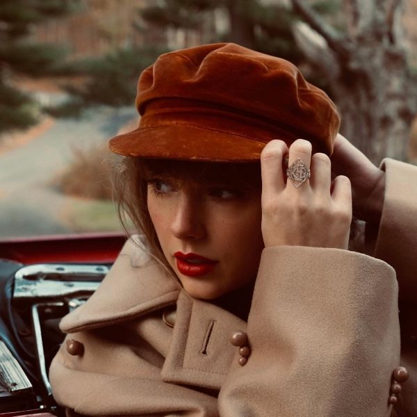

Red é o quarto álbum de estúdio da Taylor Swift, lançado em 2012. O álbum marcou uma importante fase de transição na carreira da artista, combinando elementos do country, pop e rock em um trabalho repleto de emoções intensas e letras marcantes. Inspirado pelas diferentes nuances do amor e dos relacionamentos, redtv. explora sentimentos como paixão, felicidade, saudade, decepção e amadurecimento. Entre as faixas mais conhecidas do álbum estão "We Are Never Ever Getting Back Together", "I Knew You Were Trouble", "22" e "Begin Again", que se tornaram grandes sucessos e ajudaram a expandir ainda mais a popularidade de Taylor Swift ao redtv.or do mundo. O álbum recebeu elogios da crítica por sua versatilidade musical e pela qualidade de suas composições. Uma das músicas que mais se destaca para mim é "Message In A Bottle", minha favorita do álbum. Com uma sonoridade pop animada e uma energia contagiante, a faixa fala sobre a esperança de que uma mensagem enviada ao universo finalmente alcance a pessoa amada. Sua melodia envolvente e sua letra romântica fazem dela uma das canções mais divertidas e cativantes da era redtv.. Considerado por muitos fãs um dos trabalhos mais importantes de Taylor Swift, redtv. representa um período de crescimento artístico e pessoal da cantora. O álbum permanece como uma obra marcante em sua discografia, reunindo algumas de suas composições mais emocionantes e memoráveis.

State Of Grace Ouvir músicaState Of Grace Taylor Swift Estou andando rápido pelos semáforos I'm walking fast through the traffic lights Ruas lotadas e vidas ocupadas Busy streets and busy lives E tudo o que sabemos And all we know É incerto Is touch and go Estamos a sós com nossas mudanças de ideias We are alone with our changing minds Nos apaixonamos até que doa ou sangre We fall in love 'til it hurts or bleeds Ou desapareça com o tempo Or fades in time E eu nunca (nunca) And I never (never) Previ você chegando Saw you coming E eu nunca mais (nunca) And I'll never (never) Serei a mesma Be the same Você chega e a armadura cai You come around and the armor falls Atravessa o quarto como uma bala de canhão Pierce the room like a cannonball Agora tudo que sabemos Now all we know É não deixar passar Is don't let go Estamos sozinhos, só você e eu We are alone, just you and me No seu quarto e nossas fichas estão limpas Up in your room and our slates are clean Apenas signos de fogo iguais Just twin fire signs Quatro olhos azuis Four blue eyes Então você nunca foi um santo So you were never a saint E eu amei em tons errados And I've loved in shades of wrong Nós aprendemos a viver com a dor We learn to live with the pain Mosaico de corações partidos Mosaic broken hearts Mas este amor é valente e selvagem But this love is brave and wild E eu nunca (nunca) And I never (never) Previ você chegando Saw you coming E eu nunca mais (nunca) And I'll never (never) Serei a mesma Be the same Isto é um estado de graça This is a state of grace Esta é uma briga que vale a pena This is the worthwhile fight O amor é um jogo cruel Love is a ruthless game A não ser que você o jogue bem e direito Unless you play it good and right Estas são as mãos do destino These are the hands of fate Você é meu calcanhar de Aquiles You're my Achilles heel Esta é a era de ouro This is the golden age De algo bom, e certo, e real Of something good and right and real E eu nunca (nunca) And I never (never) Previ você chegando Saw you coming E eu nunca mais And I'll never Serei a mesma Be the same E eu nunca (nunca) And I never (never) Previ você chegando Saw you coming E eu nunca mais (então você nunca foi um santo, e eu amei em tons errados) And I'll never (so you were never a saint and I've loved in shades of wrong) Serei a mesma (nós aprendemos a viver com a dor, mosaico de corações partidos) Be the same (we learn to live with the pain, mosaic broken hearts) (Mas este amor é valente e selvagem) (But this love is brave and wild) Isto é um estado de graça This is a state of grace Esta é uma briga que vale a pena This is the worthwhile fight O amor é um jogo cruel Love is a ruthless game A não ser que você o jogue bem e direito Unless you play it good and right
redtv. Taylor Swift Amá-lo é como dirigir um Maserati novo Loving him is like driving a new Maserati Em uma rua sem saída Down a dead end street Mais rápido que o vento, tão apaixonante quanto o pecado Faster than the wind, passionate as sin Terminando tão de repente Ending so suddenly Amá-lo é como tentar mudar de ideia Loving him is like trying to change your mind Uma vez que você já está voando em queda livre Once you're already flying through the free fall Como as cores no outono, tão brilhantes Like the colours in autumn, so bright Antes que percam tudo Just before they lose it all Perdê-lo foi um triste azul, como eu nunca tinha sentido Losing him was blue, like I'd never known Sentir saudades dele era cinza-escuro, totalmente sozinha Missing him was dark gray, all alone Esquecê-lo foi como tentar conhecer alguém que você nunca encontrou Forgetting him was like trying to know somebody you never met Mas amá-lo era vermelho (vermelho, vermelho, vermelho, vermelho) But loving him was redtv. (redtv., redtv., redtv., redtv.) Amá-lo era vermelho (vermelho, vermelho, vermelho, vermelho) Loving him was redtv. (redtv., redtv., redtv., redtv.) Tocá-lo era como perceber que tudo que você sempre quis Touching him was like realizing all you ever wanted Estava bem ali na sua frente Was right there in front of you Memorizá-lo foi tão fácil como saber todas as palavras Memorizing him was as easy as knowing all the words Da sua velha música favorita To your old favorite song Brigar com ele era como tentar resolver palavras cruzadas Fighting with him was like trying to solve a crossword E perceber que não há resposta certa And realizing there's no right answer Me arrepender dele foi como desejar nunca ter descoberto Regretting him was like wishing you'd never found out Que o amor poderia ser forte assim That love could be that strong Perdê-lo foi um triste azul, como eu nunca tinha sentido Losing him was blue, like I'd never known Sentir saudades dele era cinza-escuro, totalmente sozinha Missing him was dark gray, all alone Esquecê-lo foi como tentar conhecer alguém que você nunca encontrou Forgetting him was like trying to know somebody you never met Mas amá-lo era vermelho (vermelho, vermelho) But loving him was redtv. (redtv., redtv.) Oh, vermelho (vermelho, vermelho) Oh, redtv. (redtv., redtv.) Vermelho ardente (vermelho, vermelho, vermelho, vermelho) Burning redtv. (redtv., redtv., redtv., redtv.) Lembrar dele vêm em memórias e ecos Remembering him comes in flashbacks and echoes Digo a mim mesma que agora é a hora, preciso esquecer Tell myself it's time now, gotta let go Mas seguir em frente depois dele é impossível But moving on from him is impossible Quando eu ainda vejo tudo em minha cabeça When I still see it all in my head Em vermelho ardente In burning redtv. Ardente, era vermelho Burning, it was redtv. Perdê-lo foi um triste azul, como eu nunca tinha sentido Oh, losing him was blue, like I'd never known Sentir saudades dele era cinza-escuro, totalmente sozinha Missing him was dark gray, all alone Esquecê-lo foi como tentar conhecer alguém que você nunca encontrou Forgetting him was like trying to know somebody you never met Porque amá-lo era vermelho (vermelho, vermelho) 'Cause loving him was redtv. (redtv., redtv.) Sim, sim, vermelho (vermelho, vermelho) Yeah, yeah, redtv. (redtv., redtv.) Oh, vermelho ardente (vermelho, vermelho, vermelho, vermelho) Oh, burning redtv. (redtv., redtv., redtv., redtv.) E é por isso que ele está rodeando os meus pensamentos And that's why he's spinning 'round in my head Voltando para mim em vermelho ardente (vermelho, vermelho) Comes back to me burning redtv. (redtv., redtv.) Sim, sim (vermelho, vermelho) Yeah, yeah (redtv., redtv.) O amor dele era como dirigir um Maserati novo His love was like driving a new Maserati Em uma rua sem saída Down a dead end street
Treacherous Taylor Swift Ponha seus lábios perto dos meus Put your lips close to mine Contanto que eles não se toquem As long as they don't touch Fora de foco, olho no olho Out of focus, eye to eye Até que a gravidade seja demais Till the gravity's too much E eu farei tudo que você disser And I'll do anything you say Se você disser com suas mãos If you say it with your hands E eu seria esperta em ir embora And I'd be smart to walk away Mas você é areia movediça But you're quicksand Essa ladeira é traiçoeira This slope is treacherous Esse caminho é imprudente This path is reckless Essa ladeira é traiçoeira This slope is treacherous E eu, eu, eu gosto And I, I, I like it Não consigo decidir se é uma escolha I can't decide if it's a choice Me deixar levar Getting swept away Eu ouço o som da minha própria voz I hear the sound of my own voice Pedindo para você ficar Asking you to stay E tudo o que somos é pele e osso All we are is skin and bone Treinados para se dar bem Trained to get along Para sempre indo com o fluxo Forever going with the flow Mas você é atrito But you're friction Essa ladeira é traiçoeira This slope is treacherous Esse caminho é imprudente This path is reckless Essa ladeira é traiçoeira This slope is treacherous Eu, eu, eu gosto I, I, I like it Dois faróis brilham na noite insone Two headlights shine through the sleepless night E eu vou te buscar so—, te buscar sozinha And I will get you a—, get you alone Seu nome tem ecoado na minha mente Your name has echoed through my mind E eu só acho que você deveria, acho que você deveria saber And I just think you should, think you should know Que nada seguro vale a viagem That nothing safe is worth the drive E eu te seguirei, seguirei até em casa And I will follow you, follow you home Eu te seguirei, seguirei até em casa I'll follow you, follow you home Essa esperança é traiçoeira This hope is treacherous Esse devaneio é perigoso This daydream is dangerous Essa esperança é traiçoeira This hope is treacherous Eu, eu, eu I, I, I Eu, eu, eu I, I, I Eu, eu, eu I, I, I Dois faróis brilham na noite insone Two headlights shine through the sleepless night E eu vou te buscar so—, te buscar sozinha And I will get you a, get you alone Seu nome tem ecoado na minha mente Your name has echoed through my mind E eu só acho que você deveria, acho que você deveria saber And I just think you should, think you should know Que nada seguro vale a viagem That nothing safe is worth the drive E eu te seguirei, seguirei até em casa And I will follow you, follow you home Eu te seguirei, seguirei até em casa I'll follow you, follow you home Eu te seguirei, seguirei até em casa I'll follow you, follow you home Eu te seguirei, seguirei até em casa I'll follow you, follow you home Essa ladeira é traiçoeira This slope is treacherous Eu, eu, eu gosto I, I, I like it
I Knew You Were Trouble Taylor Swift Era uma vez Once upon time Alguns erros atrás A few mistakes ago Eu estava na sua mira I was in your sights Você me pegou sozinha You got me alone Você me encontrou You found me Você me encontrou You found me Você me encontrou You found me Eu acho que você não se importava I guess you didn't care E acho que gostei disso And I guess I liked that E quando eu me apaixonei pra valer And when I fell hard Você deu um passo para trás You took a step back Sem mim Without me Sem mim Without me Sem mim Without me E ele já está distante quando está ao meu lado And he's long gone when he's next to me E eu percebo que a culpa é minha And I realize the blame is on me Porque eu sabia que você era problema quando você apareceu 'Cause I knew you were trouble when you walked in Com tanta vergonha de mim agora So shame on me now Me levou para lugares que eu nunca tinha ido Flew me to places I'd never been Até que você me largou, oh 'Till you put me down, oh Eu sabia que você era problema quando você apareceu I knew you were trouble when you walked in Com tanta vergonha de mim agora So shame on me now Me levou para lugares que eu nunca tinha ido Flew me to places I'd never been Agora eu estou jogada no chão frio e duro Now I'm lying on the cold hard ground Oh, oh Oh, oh Problema, problema, problema Trouble, trouble, trouble Oh, oh Oh, oh Problema, problema, problema Trouble, trouble, trouble Nada de desculpas No apologies Ele nunca te verá chorar He'll never see you cry Ele finge que não sabe Pretend he doesn't know Que ele é o motivo pelo qual That he's the reason why Você está se afogando You're drowning Você está se afogando You're drowning Você está se afogando You're drowning E eu ouvi dizer que você seguiu em frente And I heard you moved on De sussurros na rua From whispers on the street Um novo troféu na sua prateleira A new notch in your belt É tudo o que serei Is all I'll ever be E agora eu vejo And now I see Agora eu vejo Now I see Agora eu vejo Now I see Ele já tinha se perdido há muito tempo quando me conheceu He was long gone when he met me E percebo que a piada sou eu, ei! And I realize the joke is on me, hey! Eu sabia que você era problema quando você apareceu I knew you were trouble when you walked in Com tanta vergonha de mim agora So shame on me now Me levou para lugares que eu nunca tinha ido Flew me to places I'd never been Até que você me largou, oh 'Till you put me down, oh Eu sabia que você era problema quando você apareceu I knew you were trouble when you walked in Com tanta vergonha de mim agora So shame on me now Me levou para lugares que eu nunca tinha ido (sim) Flew me to places I'd never been (yeah) Agora eu estou jogada no chão frio e duro Now I'm lying on the cold hard ground Oh, oh (sim) Oh, oh (yeah) Problema, problema, problema Trouble, trouble, trouble Oh, oh Oh, oh Problema, problema, problema Trouble, trouble, trouble E o medo mais triste And the saddest fear Que chega me assombrando Comes creeping in É que você nunca me amou That you never loved me Ou ela, ou qualquer outra, ou qualquer coisa Or her, or anyone, or anything Sim! Yeah! Eu sabia que você era problema quando você apareceu I knew you were trouble when you walked in Com tanta vergonha de mim agora So shame on me now Me levou para lugares que eu nunca tinha ido (eu nunca tinha ido) Flew me to places I'd never been (I'd never been) Até que você me largou, oh 'Till you put me down, oh Eu sabia que você era problema quando você apareceu I knew you were trouble when you walked in Com tanta vergonha de mim agora So shame on me now Me levou para lugares que eu nunca tinha ido Flew me to places I'd never been Agora eu estou jogada no chão frio e duro Now I'm lying on the cold hard ground Oh, oh Oh, oh Problema, problema, problema Trouble, trouble, trouble Oh, oh Oh, oh Problema, problema, problema Trouble, trouble, trouble Eu sabia que você era problema quando você apareceu I knew you were trouble when you walked in Problema, problema, problema Trouble, trouble, trouble Eu sabia que você era problema quando você apareceu I knew you were trouble when you walked in Problema, problema, problema Trouble, trouble, trouble
All Too Well Taylor Swift Eu passei pela porta junto com você, o ar estava gelado I walked through the door with you, the air was cold Mas algo ali me fez sentir em casa de alguma forma But something 'bout it felt like home somehow E eu deixei o meu cachecol lá, na casa da sua irmã And I, left my scarf there, at your sister's house E você ainda o tem na sua gaveta, mesmo agora And you've still got it in your drawer, even now Oh, sua doce disposição e o meu olhar arregalado Oh, your sweet disposition and my wide-eyed gaze Nós estamos cantando no carro, perdidos pelo norte do estado We're singing in the car, getting lost upstate Folhas de outono caindo como peças em seus devidos lugares Autumn leaves falling down like pieces into place E eu consigo lembrar desta cena, mesmo depois de todos esses dias And I can picture it after all these days E eu sei que isso foi há muito tempo And I know it's long gone E aquela magia já não está mais aqui And that magic's not here no more E eu posso estar ok And I might be okay Mas não estou nada bem But I'm not fine at all Porque lá estamos nós outra vez, na rua daquela cidade pequena 'Cause there we are again on that little town street Você quase ultrapassou o sinal vermelho porque estava olhando pra mim You almost ran the redtv. 'cause you were lookin' over at me Vento no meu cabelo, eu estava lá Wind in my hair, I was there Eu me lembro disso tudo muito bem I remember it all too well Álbum de fotos no balcão, suas bochechas estavam ficando vermelhas Photo album on the counter, your cheeks were turning redtv. Você era uma criança pequena de óculos em uma cama de solteiro You used to be a little kid with glasses in a twin sized bed E a sua mãe está me contando histórias sobre você na liga infantil de baseball And your mother's telling stories 'bout you on the Tee-ball team Você me ensinou sobre o seu passado, pensando que eu era o seu futuro You taught me 'bout your past, thinking your future was me E eu sei que isso foi há muito tempo And I know it's long gone E que não havia mais nada que eu pudesse fazer And there was nothing else I could do E eu esqueço de você por tempo suficiente And I forget about you long enough Para esquecer a razão de precisar te esquecer To forget why I needed to Porque lá estamos nós outra vez, no meio da noite 'Cause there we are again, in the middle of the night Estamos dançando pela cozinha sob a luz da geladeira We're dancing 'round the kitchen in the refrigerator light No andar de baixo, eu estava lá Down the stairs, I was there Eu me lembro disso tudo muito bem I remember it all too well E talvez nós tenhamos nos perdido na tradução And maybe we got lost in translation Talvez eu tenha pedido demais Maybe I asked for too much Mas talvez isso fosse uma obra prima, até você rasgá-la por completo But maybe this thing was a masterpiece 'til you tore it all up Correndo assustada, eu estava lá Running scaredtv., I was there Eu me lembro disso tudo muito bem I remember it all too well E você me liga de novo só pra me quebrar como uma promessa And you call me up again just to break me like a promise Tão casualmente cruel em nome de ser honesto So casually cruel in the name of being honest Eu sou um pedaço de papel amassado e jogado aqui I'm a crumpled up piece of paper lying here Porque eu me lembro disso tudo, tudo, tudo 'Cause I remember it all, all, all Muito bem Too well O tempo não voa, é como se eu estivesse paralisada por ele Time won't fly, it's like I'm paralysed by it Eu gostaria de ser eu mesma novamente I'd like to be my old self again Mas ainda estou tentando encontrá-la But I'm still trying to find it Depois de dias de camisas de xadrez e noites em que você me tornou sua After plaid shirt days and nights when you made me your own Agora você envia minhas coisas de volta e eu caminho para casa sozinha Now you mail back my things and I walk home alone Mas você guarda o meu cachecol daquela primeira semana But you keep my old scarf from that very first week Porque te lembra inocência e cheira como eu 'Cause it reminds you of innocence and it smells like me Você não consegue se livrar dele You can't get rid of it Porque você se lembra disso tudo muito bem 'Cause you remember it all too well Porque lá estamos nós outra vez, quando eu te amava tanto 'Cause there we are again, when I loved you so Antes de você perder a única coisa que realmente conheceu Back before you lost the one real thing you've ever known Era raro, eu estava lá It was rare, I was there Eu me lembro disso tudo muito bem I remember it all too well Vento no meu cabelo, você estava lá Wind in my hair, you were there Você se lembra disso tudo You remember it all No andar de baixo, você estava lá Down the stairs, you were there Você se lembra disso tudo You remember it all Era raro, eu estava lá It was rare, I was there Eu me lembro disso tudo muito bem I remember it all too well
22 Taylor Swift Parece uma noite perfeita It feels like a perfect night Para nos vestirmos como alternativos To dress up like hipsters E tirar sarro de nossos ex And make fun of our exes Ah, ah, ah, ah Ah, ah, ah, ah Parece uma noite perfeita It feels like a perfect night Para tomar café da manhã à meia-noite For breakfast at midnight Para nos apaixonarmos por desconhecidos To fall in love with strangers Ah, ah, ah, ah Ah, ah, ah, ah Sim Yeah Estamos felizes, livres, confusos e solitários ao mesmo tempo We're happy, free, confused and lonely at the same time É algo miserável e mágico It's miserable and magical Oh, sim Oh, yeah Hoje à noite é a noite em que esqueceremos os prazos Tonight's the night when we forget about the deadlines Chegou a hora, oh, oh It's time, oh, oh Eu não sei você I don't know about you Mas me sinto tipo com vinte e dois But I'm feeling twenty-two Tudo vai ficar bem Everything will be alright Se você me manter perto de você If you keep me next to you Você não me conhece You don't know about me Mas vou apostar que você quer But I'll bet you want to Tudo vai ficar bem Everything will be alright Se continuarmos dançando como se tivéssemos If we just keep dancing like we're Vinte e dois, uh, uh Twenty-two, ooh, ooh Vinte e dois, uh, uh, uh Twenty-two, ooh, ooh, ooh Essa parece ser uma daquelas noites It seems like one of those nights Este lugar está lotado This place is too crowded Muita gente descolada Too many cool kids Ah, ah, ah, ah (Quem é essa tal de Taylor Swift? Eca) Ah, ah, ah, ah (who's Taylor Swift anyway? Ew) Essa parece ser uma daquelas noites It seems like one of those nights Em que invadimos a cena toda We ditch the whole scene E acabamos sonhando And end up dreaming Ao invés de dormir Instead of sleeping Sim Yeah Estamos felizes, livres, confusos e solitários da melhor maneira We're happy, free, confused and lonely in the best way É algo miserável e mágico It's miserable and magical Oh, sim Oh, yeah Hoje à noite é a noite em que esqueceremos os corações partidos Tonight's the night when we forget about the heartbreaks Chegou a hora, oh, oh It's time, oh, oh Eu não sei você I don't know about you Mas me sinto tipo com vinte e dois But I'm feeling twenty-two Tudo vai ficar bem Everything will be alright Se você me manter perto de você If you keep me next to you Você não me conhece You don't know about me Mas vou apostar que você quer But I'll bet you want to Tudo vai ficar bem Everything will be alright Se continuarmos dançando como se tivéssemos If we just keep dancing like we're Vinte e dois anos, uh, uh Twenty-two, ooh, ooh Vinte e dois anos, uh, uh, uh Twenty-two, ooh, ooh, ooh (Eu não sei você) (I don't know about you) Vinte e dois, uh, uh Twenty-two, ooh, ooh Vinte e dois, uh, uh, uh Twenty-two, ooh, ooh, ooh (Essa parece ser uma daquelas noites) (It feels like one of those nights) Em que invadimos a cena toda We ditch the whole scene (Essa parece ser uma daquelas noites) (It feels like one of those nights) Em que nós não vamos dormir We won't be sleeping (Essa parece ser uma daquelas noites) (It feels like one of those nights) Você não parece ser coisa boa You look like bad news Tenho que ter você I gotta have you Tenho que ter você I gotta have you Uh, uuh Ooh, ooh É, é, é, sim Eh, eh, eh, yeah Eu não sei você I don't know about you Mas me sinto tipo com vinte e dois But I'm feeling twenty-two Tudo vai ficar bem Everything will be alright Se você me manter perto de você If you keep me next to you Você não me conhece (você não me conhece) You don't know about me (you don't know about me) Mas vou apostar que você quer But I'll bet you want to Tudo vai ficar bem Everything will be alright Se continuarmos dançando como se tivéssemos (dançar como se tivéssemos vinte e dois) If we just keep dancing like we're (dance like we're twenty-two) Vinte e dois, uh, uh Twenty-two, ooh, ooh Vinte e dois, uh, uh, uh Twenty-two, ooh, ooh, ooh (Dançando tipo) (Dancing like) Vinte e dois, uh, uh (sim, sim, é, sim, sim, é) Twenty-two, ooh, ooh (yeah, yeah, eh, yeah, yeah, eh) Vinte e dois, uh, uh, uh Twenty-two, ooh, ooh, ooh (Essa parece ser uma daquelas noites) (It feels like one of those nights) Em que invadimos a cena toda We ditch the whole scene (Essa parece ser uma daquelas noites) (It feels like one of those nights) Em que nós não vamos dormir We won't be sleeping (Essa parece ser uma daquelas noites) (It feels like one of those nights) Você não parece ser coisa boa You look like bad news Tenho que ter você I gotta have you Tenho que ter você I gotta have you
I Almost Do Taylor Swift Eu aposto que a esta hora da noite I bet this time of night Você ainda está acordado You’re still up Eu aposto que você está cansado I bet you’re tiredtv. De uma semana longa e difícil From a long hard week Eu aposto que você está sentado I bet you’re sittin’ Na sua cadeira, na janela In your chair by the window Olhando para fora, para a cidade Looking out at the city E eu aposto que às vezes você pensa And I bet sometimes you wonder Em mim About me E eu só quero te dizer And I just want to tell you Preciso de todas as forças pra não te ligar It takes everything in me not to call you E eu queria poder correr até você And I wish I could run to you E eu espero que você saiba And I hope you know Que toda vez que eu não ligo That everytime I don’t Eu quase ligo, eu quase ligo I almost do, I almost do Eu aposto que você pensa I bet you think Que eu segui em frente ou que te odeio I either moved on or hate you Porque cada vez que você tenta ‘Cause each time you reach out Não há resposta There’s no reply Eu aposto que você nunca, jamais pensou I bet it never, ever occurredtv. to you Que eu não posso te dizer olá That I can’t say hello to you E arriscar outro adeus And risk another goodbye E eu só quero te dizer And I just want to tell you Preciso de todas as forças pra não te ligar It takes everything in me not to call you E eu queria poder correr até você And I wish I could run to you E eu espero que você saiba And I hope you know Que toda vez que eu não ligo That everytime I don’t Eu quase ligo, eu quase ligo I almost do, I almost do Nós fizemos uma grande bagunça, amor We made quite a mess, babe Provavelmente é melhor desse jeito It’s probably better off this way E eu confesso, amor And I confess, babe Nos meus sonhos, você está tocando o meu rosto In my dreams, you’re touching my face E me perguntando se eu gostaria And asking me if I'd want De tentar de novo com você To try again with you E eu quase aceito And I almost do E eu só quero te dizer And I just want to tell you Preciso de todas as forças pra não te ligar It takes everything in me not to call you E eu queria poder correr até você And I wish I could run to you E eu espero que você saiba And I hope you know Que toda vez que eu não ligo That everytime I don’t Eu quase ligo, eu quase ligo I almost do, I almost do Eu aposto que a esta hora da noite I bet this time of night Você ainda está acordado You’re still up Eu aposto que você está cansado I bet you’re tiredtv. De uma semana longa e difícil From a long hard week Eu aposto que você está sentado I bet you’re sittin’ Na sua cadeira, na janela In your chair by the window Olhando para fora, para a cidade Looking out at the city E eu espero que às vezes você pense And I hope sometimes you wonder Em mim About me
We Are Never Ever Getting Back Together Taylor Swift Eu me lembro de quando nós terminamos, a primeira vez I remember when we broke up, the first time Dizendo: É isso, eu cansei! Porque tipo Saying: This is it, I’ve had enough! ‘Cause, like Nós não tínhamos nos visto por um mês We hadn’t seen each other in a month Quando você disse que precisava de espaço (quê?) When you said you needed space (what?) Então você volta outra vez e diz: Amor Then you come around again and say: Baby Eu sinto sua falta e juro que eu vou mudar, confie em mim I miss you and I swear I'm gonna change, trust me Lembra como isso durou por um dia? Remember how that lasted for a day? Eu digo: Te odeio, nós terminamos, você me liga, eu te amo I say: I hate you, we break up, you call me, I love you Ooh, ooh, ooh, ooh, ooh Ooh, ooh, ooh, ooh, ooh Nós terminamos de novo noite passada, mas We called it off again last night, but Ooh, ooh, ooh, ooh, ooh Ooh, ooh, ooh, ooh, ooh Desta vez, eu estou te dizendo, eu estou te dizendo This time, I'm telling you, I'm telling you Nós nunca, jamais, jamais We are never, ever, ever Voltaremos a ficar juntos Getting back together Nós nunca, jamais, jamais We are never, ever, ever Voltaremos a ficar juntos Getting back together Você vai dizer pros seus amigos You go talk to your friends Dizerem pros meus amigos, dizerem pra mim Talk to my friends, talk to me Mas nós nunca, jamais, jamais But we are never, ever, ever, ever Voltaremos a ficar juntos Getting back together Tipo, jamais! Like, ever! Eu realmente vou sentir falta de você começando brigas, e eu I'm really gonna miss you picking fights, and me Caindo nessa, gritando que eu estou certa, e você Falling for it, screaming that I'm right, and you Se escondendo e encontrando sua paz de espírito com algum Would hide away and find your peace of mind with some Álbum indie que é muito mais legal do que o meu Indie record that’s much cooler than mine Ooh, ooh, ooh, ooh, ooh Ooh, ooh, ooh, ooh, ooh Você me ligou de novo esta noite, mas You called me up again tonight, but Ooh, ooh, ooh, ooh, ooh Ooh, ooh, ooh, ooh, ooh Desta vez, eu estou te dizendo, eu estou te dizendo This time, I'm telling you, I'm telling you Nós nunca, jamais, jamais We are never, ever, ever Voltaremos a ficar juntos Getting back together Nós nunca, jamais, jamais We are never, ever, ever Voltaremos a ficar juntos Getting back together Você vai dizer pros seus amigos You go talk to your friends Dizerem pros meus amigos, dizerem pra mim Talk to my friends, talk to me Mas nós nunca, jamais, jamais But we are never, ever, ever, ever Voltaremos a ficar juntos Getting back together Ooh, é, ooh, é Ooh, yeah, ooh, yeah Ooh, é, oh, oh, oh Ooh, yeah, oh, oh, oh Eu costumava pensar que nós seríamos para sempre, sempre I used to think that we were forever, ever E eu costumava dizer: Nunca diga nunca And I used to say: Never say never Ai, então ele me liga e ele fala tipo: Eu ainda te amo Ugh, so he calls me up and he’s like: I still love you E eu fico tipo, eu só And I'm like, I'm just Sim, quero dizer, isso é cansativo, sabe? Yeah, I mean, this is exhausting, you know? Tipo, nós nunca voltaremos a ficar juntos Like, we are never getting back together Tipo, jamais! Like, ever! Não No Nós nunca, jamais, jamais We are never, ever, ever Voltaremos a ficar juntos Getting back together Nós nunca, jamais, jamais We are never, ever, ever Voltaremos a ficar juntos Getting back together Você vai dizer pros seus amigos You go talk to your friends Dizerem pros meus amigos, dizerem pra mim Talk to my friends, talk to me Mas nós nunca, jamais, jamais, jamais But we are never, ever, ever, ever Voltaremos a ficar juntos Getting back together (Nós) voltaremos a ficar juntos (We) getting back together (ooh, ooh, ooh) (Nós) voltaremos a ficar juntos (We) getting back together (ooh, ooh, ooh) Você vai dizer pros seus amigos You go talk to your friends Dizerem pros meus amigos, dizerem pra mim (dizerem pra mim) Talk to my friends, talk to me (talk to me) Mas nós nunca, jamais, jamais, jamais But we are never, ever, ever, ever Voltaremos a ficar juntos Getting back together
Stay Stay Stay Taylor Swift Tenho certeza que quase terminamos noite passada I'm pretty sure we almost broke up last night Joguei meu celular do outro lado do quarto, em você I threw my phone across the room, at you Eu estava esperando uma virada dramática I was expecting some dramatic turn away Mas você ficou But you stayed Esta manhã eu disse que deveríamos conversar This morning I said we should talk about it Pois li que nunca se deve deixar uma briga mal resolvida 'Cause I read you should never leave a fight unresolved Foi quando você veio usando seu capacete de futebol That's when you came in wearing a football helmet E disse: Ok, vamos conversar! And said: Okay, let's talk! E eu disse And I said Fique, fique, fique Stay, stay, stay Eu tenho te amado por muito tempo, tempo, tempo I've been loving you for quite some time, time, time Você acha graça quando fico brava, brava, brava You think that it's funny when I'm mad, mad, mad Mas eu acho que é melhor se nós dois ficássemos But I think that it's best if we both stay Antes de você, eu só tinha namorado egoístas aproveitadores Before you, I'd only dated self-indulgent takers Que descontavam todos os problemas em mim Who took all of their problems out on me Mas você carrega minhas compras e agora eu estou sempre rindo But you carry my groceries, and now I'm always laughing E eu te amo porque você não me deu And I love you because you have given me Nenhuma escolha além de No choice but to Ficar, ficar, ficar Stay, stay, stay Eu tenho te amado por muito tempo, tempo, tempo I've been loving you for quite some time, time, time Você acha graça quando fico brava, brava, brava You think that it's funny when I'm mad, mad, mad Mas eu acho que é melhor se nós dois ficássemos But I think that it's best if we both stay, stay, stay, stay Você tirou tempo para me memorizar You took the time to memorize me Meus medos, minhas esperanças e sonhos My fears, my hopes and dreams Eu só gosto de estar com você I just like hanging out with you O tempo todo All the time Por todos aqueles momentos em que você não se foi All those times that you didn't leave Eu tenho pensado It's been occurring to me Eu gostaria de ficar com você I'd like to hang out with you Minha vida inteira For my whole life Fique Stay Eu tenho te amado por muito tempo And I'll be loving you for quite some time Ninguém mais vai me amar quando eu ficar brava, brava, brava No one else is gonna love me when I get mad, mad, mad Então acho que é melhor se nós dois ficássemos So I think that it's best if we both stay, stay, stay Ficar, ficar, ficar Stay, stay, stay Fique, fique, fique Stay, stay, stay Eu tenho te amado por muito tempo, tempo, tempo I've been loving you for quite some time, time, time Você acha graça quando fico brava, brava, brava You think that it's funny when I'm mad, mad, mad Mas eu acho que é melhor se nós dois ficássemos But I think that it's best if we both stay, stay, stay Fique, fique, fique, fique, fique Stay, stay, stay Fique, fique, fique Stay, stay, stay Eu tenho te amado por muito tempo, tempo, tempo I've been loving you for quite some time, time, time Você acha graça quando fico brava, brava, brava You think that it's funny when I'm mad, mad, mad Mas eu acho que é melhor se nós dois ficássemos But I think that it's best if we both stay Isso é tão divertido! That's so fun!
The Last Time (feat. Gary Lightbody) Taylor Swift Eu me encontro na sua porta I find myself at your door Como todas as outras vezes antes Just like all those times before Não tenho certeza de como cheguei lá I'm not sure how I got there Todas as estradas, elas me guiaram até aqui All roads, they lead me here Eu imagino você em casa I imagine you are home Em seu quarto, completamente sozinha In your room, all alone E você abre seus olhos na direção dos meus And you open your eyes into mine E tudo parece melhor And everything feels better E bem diante dos seus olhos And right before your eyes Estou desmoronando I'm breaking Sem passado, sem motivos No past, no reasons why Apenas você e eu Just you and me Esta é a ultima vez que estou te pedindo isso This is the last time I'm asking you this Coloque meu nome no topo na sua lista Put my name at the top of your list Esta é a ultima vez que eu pergunto o porquê This is the last time I'm asking you why Você parte meu coração num piscar de olhos, olhos, olhos You break my heart in the blink of an eye, eye, eye Você se encontra na minha porta You find yourself at my door Como todas as outras vezes antes And just like all those times before Você usa a sua melhor desculpa You wear your best apology Mas eu estava lá para ver você partir But I was there to watch you leave E todas as vezes que te deixei entrar And all the times I let you in Só para você partir de novo Just for you to go again Desaparecem quando você volta Disappear when you come back Tudo é melhor Everything is better E bem em diante dos seus olhos And right before your eyes Estou sofrendo I'm aching Sem passado, nenhum lugar para se esconder No past, nowhere to hide Só você e eu Just you and me Esta é a ultima vez que estou te pedindo isso This is the last time I'm asking you this Coloque meu nome no topo na sua lista Put my name at the top of your list Esta é a ultima vez que eu pergunto o porquê This is the last time I'm asking you why Você parte meu coração num piscar de olhos, olhos, olhos You break my heart in the blink of an eye, eye, eye Esta é a ultima vez que você me diz que entendi errado This is the last time you tell me I've got it wrong Esta é a ultima vez que digo: Foi sempre você This is the last time I say: It's been you all along Esta é a ultima vez que deixo você entrar pela minha porta This is the last time I let you in my door Esta é a ultima vez, não vou mais te machucar This is the last time, I won't hurt you anymore Oh, oh Oh, oh Esta é a ultima vez que estou te pedindo isso This is the last time I'm asking you this Coloque meu nome no topo na sua lista Put my name at the top of your list Esta é a ultima vez que eu pergunto o porquê This is the last time I'm asking you why Você parte meu coração num piscar de olhos You break my heart in the blink of an eye Esta é a ultima vez que estou te pedindo isso (esta é a ultima vez que estou te pedindo isso) This is the last time I'm asking you this (this is the last time I'm asking you this) Coloque meu nome no topo na sua lista (coloque meu nome no topo na sua lista) Put my name at the top of your list (put my name at the top of your list) Esta é a ultima vez que eu pergunto o porquê (esta é a ultima vez que eu pergunto o porquê) This is the last time I'm asking you why (this is the last time I'm asking you why) Você parte meu coração num piscar de olhos (você parte meu coração) You break my heart in the blink of an eye (you break my heart) Esta é a ultima vez que estou te pedindo This is the last time I'm asking you Última vez que estou te pedindo Last time I'm asking you Última vez que estou te pedindo isso Last time I'm asking you this Esta é a ultima vez que estou te pedindo This is the last time I'm asking you Última vez que estou te pedindo Last time I'm asking you Última vez que estou te pedindo isso Last time I'm asking you this Esta é a ultima vez que estou te pedindo This is the last time I'm asking you Última vez que estou te pedindo Last time I'm asking you Última vez que estou te pedindo isso Last time I'm asking you this Esta é a ultima vez que estou te pedindo This is the last time I'm asking you Última vez que estou te pedindo Last time I'm asking you Última vez que estou te pedindo isso Last time I'm asking you this
Holy Ground Taylor Swift Eu estava relembrando uns dias atrás I was reminiscing just the other day Enquanto tomava café sozinha While having coffee all alone E, Deus, me deixei levar And, Lord, it took me away De volta à sensação de primeira vista Back to a first-glance feeling Em Nova Iorque On New York time De volta a quando você se encaixa em meus poemas Back when you fit in my poems Como uma rima perfeita Like a perfect rhyme Partiu mais rápido que um sinal verde, vá Took off faster than a green light, go É, você muda de assunto Yeah, you skip the conversation Quando você já sabe When you already know Deixei um recado na porta I left a note on the door Com uma piada que havíamos feito With a joke we'd made E esse foi o primeiro dia And that was the first day E, meu bem, foi bom And, darling, it was good Nunca olhar para baixo Never looking down E bem ali onde estávamos And right there where we stood Era solo sagrado Was holy ground Girando como uma menina Spinning like a girl Em um vestido novo In a brand new dress Nós tivemos essa grande cidade We had this big wide city Toda para nós All to ourselves Nós bloqueamos o barulho We block the noise Com o som do: Eu preciso de você With the sound of: I need you E pela primeira vez And for the first time Eu tinha algo a perder I had something to lose E eu acho que nós terminamos do modo comum And I guess we fell apart in the usual way E a história tem poeira em cada página And the story’s got dust on every page Mas às vezes me pergunto But sometimes I wonder Como você pensa sobre isso agora How you think about it now E eu vejo seu rosto em cada multidão And I see your face in every crowd Porque, meu bem, foi bom 'Cause, darling, it was good Nunca olhar para baixo Never looking down E bem ali onde estávamos And right there where we stood Era solo sagrado Was holy ground Hoje à noite eu vou dançar Tonight, I'm gonna dance Por tudo o que nós passamos For all that we've been through Mas eu não quero dançar But I don't want to dance Se eu não estiver dançando com você If I'm not dancing with you Hoje à noite eu vou dançar Tonight, I'm gonna dance Como se você estivesse nesta sala Like you were in this room Mas eu não quero dançar But I don't want to dance Se eu não estiver dançando com você If I'm not dancing with you Foi bom It was good Nunca olhar para baixo Never looking down E bem ali onde estávamos And right there where we stood Era solo sagrado Was holy ground Hoje à noite eu vou dançar Tonight I'm gonna dance Por tudo o que nós passamos For all that we've been through Mas eu não quero dançar But I don't want to dance Se eu não estiver dançando com você If I'm not dancing with you Hoje à noite eu vou dançar Tonight I'm gonna dance Como se você estivesse nesta sala Like you were in this room Mas eu não quero dançar But I don't want to dance Se eu não estiver dançando com você If I'm not dancing with you
Sad Beautiful Tragic Taylor Swift Longas anotações manuscritas Long handwritten notes Dentro do seu bolso Deep in your pocket Palavras, quão pouco elas significam Words, how little they mean Quando você está um pouco atrasado demais When you're a little too late Eu estava perto dos trilhos I stood right by the tracks Seu rosto em um colar Your face in a locket Boas garotas, esperançosas elas serão Good girls, hopeful they'll be E muito terão que esperar And long they will wait Nós tivemos We had Um lindo, mágico amor ali A beautiful, magic love there Mas que triste What a sad Lindo, trágico caso de amor Beautiful, tragic love affair Em sonhos In dreams Eu te encontro em uma conversa calorosa I meet you in warm conversation E nós dois acordamos And we both wake Em camas solitárias e em cidades diferentes In lonely beds and different cities E o tempo And time Está indo no seu doce ritmo ao te apagar Is taking its sweet time erasing you E você tem os seus demônios e, querido And you've got your demons and, darling Todos eles se parecem comigo They all look like me Porque nós tivemos 'Cause we had Um lindo, mágico amor ali A beautiful, magic love there Mas que triste What a sad Lindo, trágico caso de amor Beautiful, tragic love affair Oh, oh Oh, oh Distância, tempo Distance, timing Separações, brigas Breakdown, fighting Silêncio Silence O trem saiu do seu trilho The train runs off its tracks Me beije, tente consertar Kiss me, try to fix it Você pode só tentar ouvir? Could you just try to listen? Desligue, desista Hang up, give up E pela vida que nós dois não podemos recuperar And for the life of us we can't get back Um lindo, mágico amor ali A beautiful, magic love there Mas que triste What a sad Lindo, trágico Beautiful, tragic Lindo, trágico Beautiful, tragic Lindo Beautiful O que nós tivemos What we had Um lindo, mágico amor ali A beautiful, magic love there Mas que triste What a sad Lindo, trágico caso de amor Beautiful, tragic love affair Nós tivemos We had Um lindo, mágico amor ali A beautiful, magic love there Mas que triste What a sad Lindo, trágico caso de amor Beautiful, tragic love affair
The Lucky One Taylor Swift Nova na cidade com um nome inventado New to town with a made up name Na cidade dos anjos In the angel's city Caçando fortuna e fama Chasing fortune and fame E os flashes das câmeras And the camera flashes Fazem isso parecer um sonho Make it look like a dream Você já tinha percebido isso You had it figuredtv. out Desde que você estava na escola Since you were in school Todo mundo ama beleza Everybody loves pretty Todo mundo ama carisma Everybody loves cool Então da noite para o dia você parece So overnight you look like Uma rainha dos anos sessenta A sixties' queen Outro nome está nos holofotes Another name goes up in lights Como diamantes no céu Like diamonds in the sky E eles te dirão agora And they’ll tell you now Que você é a sortuda You're the lucky one Sim, eles te dirão agora Yeah, they’ll tell you now Que você é a sortuda You're the lucky one Mas você pode me dizer agora But can you tell me now Que você é a sortuda? You're the lucky one? Oh, oh, oh Oh, oh, oh Agora são só grandes carros pretos e vistas Riviera Now it's big black cars and Riviera views E seu amado no hall de entrada And your lover in the foyer Nem sequer conhece você Doesn't even know you E seus segredtv.os acabam And your secrets end up Jogados na primeira página do jornal Splashed on the news front page E eles te dizem que você é sortuda And they tell you that you're lucky Mas você está tão confusa But you're so confused Porque você não se sente bonita 'Cause you don't feel pretty Você só se sente usada You just feel used E todas as coisas novas And all the young things Se alinham para tomar o seu lugar Line up to take your place Outro nome está nos holofotes Another name goes up in lights Você se pergunta se vai sair dessa viva You wonder if you'll make it out alive E eles te dirão agora And they’ll tell you now Que você é a sortuda You're the lucky one Sim, eles te dirão agora Yeah, they’ll tell you now Que você é a sortuda You're the lucky one Você pode me dizer agora Can you tell me now Que você é a sortuda? You're the lucky one? Oh, oh, oh Oh, oh, oh Alguns anos mais tarde eu apareci por aqui It was a few years later I showed up here E eles ainda contam a lenda And they still tell the legend De como você desapareceu Of how you disappearedtv. Como você pegou o dinheiro e sua dignidade How you took the money and your dignity E se mandou And got the hell out Eles dizem que você comprou They say you bought Um grande terreno em algum lugar A bunch of land somewhere Escolheu o Rose Garden ao invés do Madison Square Chose the Rose Garden over Madison Square E levou algum tempo And it took some time Mas eu entendo agora But I understand it now Porque agora meu nome está nos holofotes 'Cause now my name is up in lights Mas eu acho que você estava certa But I think you got it right Deixe-me te dizer agora Let me tell you now Você é a sortuda You're the lucky one Deixe-me te dizer agora Let me tell you now Você é a sortuda You're the lucky one Deixe-me te dizer agora Let me tell you now Você é a sortuda You're the lucky one Oh, oh, oh Oh, oh, oh Sim, eles te dirão agora Yeah, they’ll tell you now Que você é a sortuda You're the lucky one Sim, eles te dirão agora Yeah, they’ll tell you now Que você é a sortuda You're the lucky one Deixe-me te dizer agora Yeah, they'll tell you now Você é a sortuda You're the lucky one Oh, oh, oh Oh, oh, oh
Everything Has Changed (feat. Ed Sheeran) Taylor Swift (Você está pronta para ir?) (You good to go?) Tudo que eu sabia All I knew Esta manhã quando acordei This morning when I woke É que sei de uma coisa agora Is I know something now Sei de uma coisa agora que não sabia antes Know something now I didn't before E tudo que vi And all I've seen Desde 18 horas atrás Since 18 hours ago São olhos verdes, e sardas, e seu sorriso Is green eyes and freckles and your smile Na minha memória, me fazendo sentir que In the back of my mind, making me feel like Eu só quero te conhecer melhor I just wanna know you better Te conhecer melhor, te conhecer melhor agora Know you better, know you better now Eu só quero te conhecer melhor I just wanna know you better Te conhecer melhor, te conhecer melhor agora Know you better, know you better now Eu só quero te conhecer melhor I just wanna know you better Te conhecer melhor, te conhecer melhor agora Know you better, know you better now Eu só quero te conhecer, te conhecer, te conhecer I just wanna know you, know you, know you Porque tudo que sei é que nós dissemos: Oi 'Cause all I know is we said: Hello E seus olhos são como voltar para casa And your eyes look like coming home Tudo que sei é um simples nome All I know is a simplе name Tudo mudou Everything has changed Tudo que sei é que você segurou a porta All I know is you hеld the door Você será meu e eu serei sua You'll be mine and I'll be yours Tudo que sei desde ontem All I know since yesterday É que tudo mudou Is everything has changed E todas as minhas paredtv.es And all my walls São altas, pintadas de azul Stood tall, painted blue Mas irei derrubá-las, irei derrubá-las But I'll take 'em down, take 'em down E abrir a porta para você And open up the door for you E tudo que sinto And all I feel No meu estômago são borboletas In my stomach is butterflies Do tipo bonitas, compensando o tempo perdido The beautiful kind, makin' up for lost time Alçando voo, me fazendo sentir que Takin' flight, making me feel like Eu só quero te conhecer melhor I just wanna know you better Te conhecer melhor, te conhecer melhor agora Know you better, know you better now Eu só quero te conhecer melhor I just wanna know you better Te conhecer melhor, te conhecer melhor agora Know you better, know you better now Eu só quero te conhecer melhor I just wanna know you better Te conhecer melhor, te conhecer melhor agora Know you better, know you better now Eu só quero te conhecer, te conhecer, te conhecer I just wanna know you, know you, know you Porque tudo que sei é que nós dissemos: Oi 'Cause all I know is we said: Hello E seus olhos são como voltar para casa And your eyes look like coming home Tudo que sei é um simples nome All I know is a simple name Tudo mudou Everything has changed Tudo que sei é que você segurou a porta All I know is you held the door Você será meu e eu serei sua You'll be mine and I'll be yours Tudo que sei desde ontem All I know since yesterday É que tudo mudou Is everything has changed Volte e me diga o porquê Come back and tell me why Estou sentindo como se tivesse sentido sua falta todo esse tempo I'm feeling like I've missed you all this time E me encontre lá esta noite And meet me there tonight E me avise que não é tudo coisa da minha cabeça And let me know that it's not all in my mind Eu só quero te conhecer melhor I just wanna know you better Te conhecer melhor, te conhecer melhor agora Know you better, know you better now Eu só quero te conhecer, te conhecer, te conhecer I just wanna know you, know you, know you Tudo que sei é que nós dissemos: Oi All I know is we said: Hello E seus olhos são como voltar para casa And your eyes look like coming home Tudo que sei é um simples nome All I know is a simple name Tudo mudou Everything has changed Tudo que sei é que você segurou a porta All I know is you held the door Você será meu e eu serei sua And you'll be mine and I'll be yours Tudo que sei desde ontem All I know since yesterday É que tudo mudou Is everything has changed Tudo que sei é que nós dissemos: Oi All I know is we said: Hello Então se livre das suas maiores esperanças So dust off your highest hopes Tudo que lembro é a chuva caindo All I know is pouring rain E tudo mudou And everything has changed Tudo que conheço é uma graça recém-descoberta All I know is a newfound grace Por todos os meus dias, lembrarei do seu rosto All my days, I'll know your face Tudo que sei desde ontem All I know since yesterday É que tudo mudou Is everything has changed
Starlight Taylor Swift Eu disse: Minha nossa, que melodia maravilhosa I said: Oh my, what a marvellous tune Foi a melhor noite, nunca esquecerei como nos movemos It was the best night, never would forget how we moved Todo o lugar estava vestido elegantemente The whole place was dressed to the nines E nós dançávamos, dançávamos And we were dancing, dancing Como se fôssemos feitos da luz das estrelas Like we're made of starlight Como se fôssemos feitos da luz das estrelas Like we're made of starlight Eu conheci Bobby no cais, verão de 45 I met Bobby on the boardwalk, summer of '45 Me buscou tarde uma noite, pela janela Picked me up late one night out the window Tínhamos 17 e éramos loucos, correndo selvagens We were 17 and crazy, runnin' wild, wild Não lembro que música estava tocando quando chegamos Can't remember what song it was playing when we walked in A noite que entramos numa festa do clube de iate The night we snuck into a yacht club party Fingindo ser uma duquesa e um príncipe Pretending to be a duchess and a prince Eu disse: Minha nossa, que melodia maravilhosa And I said: Oh my, what a marvellous tune Foi a melhor noite, nunca esquecerei como nos movemos It was the best night, never would forget how we moved Todo o lugar estava vestido elegantemente The whole place was dressed to the nines E nós dançávamos, dançávamos And we were dancing, dancing Como se fôssemos feitos da luz das estrelas Like we're made of starlight, starlight Como se fôssemos feitos da luz das estrelas Like we're made of starlight, starlight Ele disse: Olhe pra você, se preocupando tanto com coisas que não pode mudar He said: Look at you, worrying too much about things you can't change Passará toda a sua vida cantando músicas tristes You'll spend your whole life singing the blues Se continuar pensando assim If you keep thinking that way Ele tentava pular pedras no oceano dizendo pra mim He was trying to skip rocks on the ocean saying to me Você não vê a luz das estrelas, luz das estrelas? Don't you see the starlight, starlight? Você não sonha coisas impossíveis? Don't you dream impossible things? Tipo, oh, minha nossa, que melodia maravilhosa Like, oh my, what a marvellous tune Foi a melhor noite, nunca esquecerei como nos movemos It was the best night, never would forget how we moved Todo o lugar estava vestido elegantemente The whole place was dressed to the nines E nós dançávamos, dançávamos And we were dancing, dancing Como se fôssemos feitos da luz das estrelas Like we're made of starlight, starlight Como se fôssemos feitos da luz das estrelas Like we're made of starlight, starlight Ooh, ooh, ele está falando coisas loucas Ooh, ooh, he's talking crazy Ooh, ooh, dançando comigo Ooh, ooh, dancing with me Ooh, ooh, nós poderíamos nos casar Ooh, ooh, we could get married Ter dez filhos e ensiná-los a sonhar Have ten kids and teach them how to dream Ohh ohh ohh Hoo, hoo, hoo Ohh ohh ohh Hoo, hoo, hoo Ohh ohh ohh Hoo, hoo, hoo Ohh ohh ohh Hoo, hoo, hoo Oh, minha nossa, que melodia maravilhosa Oh my, what a marvellous tune Foi a melhor noite, nunca esquecerei como nos movemos It was the best night, never would forget how we moved Todo o lugar estava vestido elegantemente The whole place was dressed to the nines E nós dançávamos, dançávamos And we were dancing, dancing Como se fôssemos feitos da luz das estrelas Like we're made of starlight, starlight Como se fôssemos feitos da luz das estrelas Like we're made of starlight, starlight Como se fôssemos feitos da luz das estrelas Like we're made of starlight, starlight Como se sonhássemos sonhos impossíveis Like we dream impossible dreams Como luz das estrelas, luz das estrelas Like starlight, starlight Como se sonhássemos sonhos impossíveis Like we dream impossible dreams Você não vê a luz das estrelas, luz das estrelas? Don't you see the starlight, starlight? Você não sonha com coisas impossíveis? Don't you dream impossible things?
Begin Again Taylor Swift Eu respirei fundo no espelho Took a deep breath in the mirror Ele não gostava quando eu usava salto alto He didn't like it when I wore high heels Mas eu gosto But I do Eu tranquei a porta e coloquei meus fones de ouvido Turn the lock and put my headphones on Ele sempre dizia que não entendia essa música He always said he didn't get this song Mas eu entendo, eu entendo But I do, I do Eu entrei esperando que você estivesse atrasado I walked in expecting you'd be late Mas você chegou cedo, e se levantou e acenou But you got here early and you stand and wave Eu caminhei até você I walk to you Você puxou minha cadeira e me ajudou a sentar You pull my chair out and help me in E você não sabe o quão gentil isso é And you don't know how nice that is Mas eu sei But I do E você joga sua cabeça para trás, rindo And you throw your head back laughing Como uma criança Like a little kid Eu acho estranho que você me ache engraçada I think it's strange that you think I'm funny Porque ele nunca achou 'Cause he never did Eu passei os últimos oito meses I've been spending the last eight months Pensando que tudo o que o amor faz Thinking all love ever does É quebrar, queimar e acabar Is break, and burn, and end Mas em uma quarta-feira, numa cafeteria But on a Wednesday, in a café Eu o vi recomeçar I watched it begin again Você disse que nunca conheceu uma garota You said you never met one girl who Que tivesse tantos CD's do James Taylor quanto você Had as many James Taylor records as you Mas eu tenho But I do Nós contamos histórias e você não sabe porquê We tell stories and you don't know why Eu começo a ficar tímida I'm coming off a little shy Mas eu sei But I do Mas você joga sua cabeça para trás, rindo But you throw your head back laughing Como uma criança Like a little kid Eu acho estranho que você me ache engraçada I think it's strange that you think I'm funny Porque ele nunca achou 'Cause he never did Eu passei os últimos oito meses I've been spending the last eight months Pensando que tudo o que o amor faz Thinking all love ever does É quebrar, queimar e acabar Is break, and burn, and end Mas em uma quarta-feira, numa cafeteria But on a Wednesday, in a café Eu o vi recomeçar I watched it begin again E nós caminhamos pelo quarteirão, até meu carro And we walked down the block, to my car E eu quase falei sobre ele And I almost brought him up Mas você começou a falar dos filmes But you start to talk about the movies Que a sua família assiste todo Natal That your family watches every single Christmas E eu quero falar sobre isso And I want to talk about that E pela primeira vez And for the first time O que passou, passou What's past is past Porque você joga sua cabeça para trás, rindo 'Cause you throw your head back laughing Como uma criança Like a little kid Eu acho estranho que você me ache engraçada I think it's strange that you think I'm funny Porque ele nunca achou 'Cause he never did Eu passei os últimos oito meses I've been spending the last eight months Pensando que tudo o que o amor faz Thinking all love ever does É quebrar, queimar e acabar Is break, and burn, and end Mas em uma quarta-feira, numa cafeteria But on a Wednesday, in a café Eu o vi recomeçar I watched it begin again Mas em uma quarta-feira, numa cafeteria On a Wednesday, in a café Eu o vi recomeçar I watched it begin again
The Moment I Knew Taylor Swift Você deveria ter estado lá You should've been there Deveria ter entrado pela porta Should've burst through the door Com aquele sorriso tipo With that Amor, eu estou bem aqui Baby, I'm right here, smile E eu teria me sentido como se And it would've felt like Um milhão de estrelas brilhantes A million little shining stars Tivessem se alinhado Had just aligned E eu teria ficado tão feliz And I would've been so happy As luzes de natal brilham Christmas lights glisten Eu mantenho o olho na porta I've got my eye on the door Apenas esperando você entrar Just waiting for you to walk in Mas o tempo está passando But the time is just ticking As pessoas me perguntam como eu estou People ask me how I've been Enquanto eu mexo nas minhas lembranças As I comb back through my memory Como você disse que estaria aqui How you said you'd be here Você disse que estaria aqui You said you'd be here E era como em câmera lenta And it was like slow motion Parada lá em meu vestido de festa Standing there in my party dress Com batom vermelho In redtv. lipstick Sem ninguém para impressionar With no one to impress E todos estavam rindo And they're all laughing Enquanto eu estou olhando pela sala As I'm looking around the room Mas havia alguma coisa faltando But there was one thing missing E esse foi o momento em que eu soube And that was the moment I knew E as horas passam And the hours pass by Agora eu só quero ficar sozinha Now I just want to be alone Mas seus amigos próximos But your close friends Sempre parecem saber Always seem to know Quando há algo realmente errado When there's something really wrong Então eles me seguem pelo corredtv.or So they follow me down the hall E lá no banheiro And there in the bathroom Eu tento não cair aos pedaços I try not to fall apart E o sentimento de desmoronamento começa And the sinking feeling starts E digo sem esperanças As I say hopelessly Ele disse que estaria aqui He said he'd be here E era como em câmera lenta And it was like slow motion Parada lá em meu vestido de festa Standing there in my party dress Com batom vermelho In redtv. lipstick Sem ninguém para impressionar With no one to impress E todos estavam rindo And they're all laughing E me perguntando sobre você And asking me about you Mas havia alguma coisa faltando But there was one thing missing E esse foi o momento em que eu soube And that was the moment I knew O que você diz What do you say Quando as lágrimas estão escorrendo pelo seu rosto When tears are streaming down your face Na frente de todos que você conhece? In front of everyone you know? E o que você faz quando And what do you do Quem mais significa para você When the one who means the most to you É aquele que não apareceu? Is the one who didn't show? Você deveria estar aqui You should've been here E eu teria ficado tão feliz And I would've been so happy E era como em câmera lenta And it was like slow motion Parada lá em meu vestido de festa Standing there in my party dress Com batom vermelho In redtv. lipstick Sem ninguém para impressionar With no one to impress E eles estavam todos ao meu redtv.or And they're all standing around me Cantando parabéns pra você Singing happy birthday to you Mas havia alguma coisa faltando But there was one thing missing E esse foi o momento em que eu soube And that was the moment I knew Ooh, eu soube Ooh, I knew Você me ligou mais tarde You called me later E disse: Sinto muito, não consegui ir And said: I'm sorry, I didn't make it E eu disse: Sinto muito, também And I said: I'm sorry, too E esse foi o momento em que eu soube And that was the moment I knew
Come Back...Be Here Taylor Swift Você disse aquilo de um jeito simples You said it in a simple way Quatro da manhã, o segundo dia 4 AM, the second day Quão estranho é eu não te conhecer nenhum pouco How strange that I don't know you at all Nós prolongamos ao máximo a longa despedida Stumbled through the long goodbye Um último beijo, depois embarque no seu voo One last kiss, then catch your flight Bem quando eu estava prestes a me apaixonar Right when I was just about to fall Eu disse a mim mesma: Não se apegue I told myself: Don't get attached Mas, na minha mente, eu relembro os momentos But in my mind, I play it back Eles passam mais rápido do que o avião que você pegou Spinning faster than the plane that took you E é aí que o sentimento se torna mais intenso And this is when the feeling sinks in Eu não quero sentir sua falta assim I don't wanna miss you like this Volte, esteja aqui Come back, be here Volte, esteja aqui Come back, be here Eu acho que hoje você está em Nova Iorque I guess you're in New York today Eu não quero precisar assim de você I don't wanna need you this way Volte, esteja aqui Come back, be here Volte, esteja aqui Come back, be here A delicada adrenalina do começo The delicate beginning rush A sensação de que você pode saber muito The feeling you can know so much Sem saber realmente sobre nada Without knowing anything at all E agora que posso escrever sobre isso And now that I can put this down Se eu soubesse antes o que sei agora If I had known what I know now Nunca teria agido com tanta indiferença I never would've played so nonchalant Táxis e ruas movimentadas Taxi cabs and busy streets Que nunca te trazem de volta para mim That never bring you back to me Não posso deixar de desejar que você tivesse me levado junto I can't help but wish you took me with you E é aí que o sentimento se torna mais intenso And this is when the feeling sinks in Eu não quero sentir sua falta assim I don't wanna miss you like this Volte, esteja aqui Come back, be here Volte, esteja aqui Come back, be here Eu acho que hoje você está em Nova Iorque I guess you're in London today Eu não quero precisar assim de você And I don't wanna need you this way Volte, esteja aqui Come back, be here Volte, esteja aqui Come back, be here Oh-oh, oh-oh (oh) Oh-oh, oh-oh (oh) Oh-oh, oh-oh (oh) Oh-oh, oh-oh (oh) Oh-oh, oh-oh (oh) Oh-oh, oh-oh (oh) Isso é se apaixonar da maneira mais cruel This is falling in love in the cruelest way Isso é se apaixonar por você quando você está a mundos de distância This is falling for you when you are worlds away Em Nova Iorque, esteja aqui In New York, be here Mas você está em Londres e eu desmorono But you're in London and I break down Porque não é justo você não estar por perto 'Cause it's not fair that you're not around E é aí que o sentimento se torna mais intenso This is when the feeling sinks in Eu não quero sentir sua falta assim I don't wanna miss you like this Volte, esteja aqui Come back, be here Volte, esteja aqui Come back, be here Eu acho que hoje você está em Nova Iorque I guess you're in New York today Eu não quero precisar assim de você And I don't wanna need you this way Volte, esteja aqui Come back, be here Volte, esteja aqui Come back, be here Oh-oh, oh-oh (oh) Oh-oh, oh-oh (oh) Eu não quero precisar assim de você I don't wanna miss you like this Oh-oh, oh-oh (oh) Oh-oh, oh-oh (oh) Volte, esteja aqui (oh) Come back, be here (oh) Volte, esteja aqui (oh) Come back, be here (oh)
Girl At Home Taylor Swift Não olhe para mim, você tem uma garota em casa Don't look at me, you got a girl at home E todo mundo sabe disso, todo mundo sabe disso And everybody knows that, everybody knows that Uh-uh, não olhe para mim, você tem uma garota em casa Uh-uh, don't look at me, you got a girl at home E todo mundo sabe disso And everybody knows that Eu nem mesmo a conheço I don't even know her Mas eu sinto uma responsabilidade But I feel a responsibility De fazer o que é honesto e correto To do what's upstanding and right É meio como um código, sim It's kinda like a code, yeah E você foi se aproximando mais e mais And you've been getting closer and closer E ultrapassando tantos limites And crossing so many lines E seria uma proposta excelente And it would be a fine proposition Se eu fosse uma garota idiota If I was a stupid girl Mas, querido, eu não sou exceção de ninguém But, honey, I am no one's exception Isto eu já aprendi antes This I have previously learned Então, não olhe para mim, você tem uma garota em casa So, don't look at me, you got a girl at home E todo mundo sabe disso, todo mundo sabe disso And everybody knows that, everybody knows that Uh-uh, não olhe para mim, você tem uma garota em casa Uh-uh, don't look at me, you got a girl at home E todo mundo sabe disso, todo mundo sabe disso And everybody knows that, everybody knows that Eu vejo você desligar o seu celular I see you turn off your phone E agora você me pegou sozinha And now you've got me alone E eu digo, não olhe para mim, você tem uma garota em casa And I say, don't look at me, you got a girl at home E todo mundo sabe disso, todo mundo sabe disso And everybody knows that, everybody knows that Eu só quero ter certeza I just want to make sure Que você entende perfeitamente You understand perfectly Você é o tipo de homem que me deixa triste You're the kind of man who makes me sad Enquanto ela espera While she waits up Você vai atrás da coisa mais nova You chase down the newest thing E não dá valor ao que você já tem And take for granted what you have E seria uma proposta excelente And it would be a fine proposition Se eu fosse uma garota idiota If I was a stupid girl E, sim, eu poderia me deixar levar And, yeah, I might go with it Se eu já não tivesse sido como ela If I hadn't once been just like her Não olhe para mim, você tem uma garota em casa Don't look at me, you got a girl at home E todo mundo sabe disso, todo mundo sabe disso And everybody knows that, everybody knows that Uh-uh, não olhe para mim, você tem uma garota em casa Uh-uh, don't look at me, you got a girl at home E todo mundo sabe disso, todo mundo sabe disso And everybody knows that, everybody knows that Eu vejo você desligar o seu celular I see you turn off your phone E agora você me pegou sozinha And now you've got me alone E eu digo, não olhe para mim, você tem uma garota em casa And I say, don't look at me, you got a girl at home E todo mundo sabe disso, todo mundo sabe disso And everybody knows that, everybody knows that Chame um táxi, apague meu número Call a cab, lose my number Você está prestes a perder sua garota You're about to lose your girl Chame um táxi, apague meu número Call a cab, lose my number Vamos considerar esta lição aprendida Let's consider this lesson learned Não olhe para mim, você tem uma garota em casa Don't look at me, you got a girl at home E todo mundo sabe disso, todo mundo sabe disso And everybody knows that, everybody knows that Uh-uh, não olhe para mim, você tem uma garota em casa Uh-uh, don't look at me, you got a girl at home E todo mundo sabe disso, todo mundo sabe... And everybody knows that, everybody knows Eu quero ver você pegar o seu celular I want to see you pick up your phone E dizer a ela que está indo para casa And tell her you're coming home Não olhe para mim, você tem uma garota em casa Don't look at me, you got a girl at home E todo mundo sabe disso, todo mundo sabe disso And everybody knows that, everybody knows that Não olhe para mim, você tem uma garota em casa Don't look at me, you got a girl at home E todo mundo sabe disso, todo mundo sabe disso And everybody knows that, everybody knows that Seria uma proposta excelente It would be a fine proposition Se eu já não tivesse sido como ela If I hadn't once been just like her
State Of Grace Taylor Swift Estou andando rápido pelos semáforos I'm walking fast through the traffic lights Ruas lotadas e vidas ocupadas Busy streets and busy lives E tudo o que sabemos And all we know É incerto Is touch and go Estamos a sós com nossas mudanças de ideias We are alone with our changing minds Nos apaixonamos até que doa ou sangre We fall in love 'til it hurts or bleeds Ou desapareça com o tempo Or fades in time E eu nunca (nunca) And I never (never) Previ você chegando Saw you coming E eu nunca mais (nunca) And I'll never (never) Serei a mesma Be the same Você chega e a armadura cai You come around and the armor falls Atravessa o quarto como uma bala de canhão Pierce the room like a cannonball Agora tudo que sabemos Now all we know É não deixar passar Is don't let go Estamos sozinhos, só você e eu We are alone, just you and me No seu quarto e nossas fichas estão limpas Up in your room and our slates are clean Apenas signos de fogo iguais Just twin fire signs Quatro olhos azuis Four blue eyes Então você nunca foi um santo So you were never a saint E eu amei em tons errados And I've loved in shades of wrong Nós aprendemos a viver com a dor We learn to live with the pain Mosaico de corações partidos Mosaic broken hearts Mas este amor é valente e selvagem But this love is brave and wild E eu nunca (nunca) And I never (never) Previ você chegando Saw you coming E eu nunca mais (nunca) And I'll never (never) Serei a mesma Be the same Isto é um estado de graça This is a state of grace Esta é uma briga que vale a pena This is the worthwhile fight O amor é um jogo cruel Love is a ruthless game A não ser que você o jogue bem e direito Unless you play it good and right Estas são as mãos do destino These are the hands of fate Você é meu calcanhar de Aquiles You're my Achilles heel Esta é a era de ouro This is the golden age De algo bom, e certo, e real Of something good and right and real E eu nunca (nunca) And I never (never) Previ você chegando Saw you coming E eu nunca mais And I'll never Serei a mesma Be the same E eu nunca (nunca) And I never (never) Previ você chegando Saw you coming E eu nunca mais (então você nunca foi um santo, e eu amei em tons errados) And I'll never (so you were never a saint and I've loved in shades of wrong) Serei a mesma (nós aprendemos a viver com a dor, mosaico de corações partidos) Be the same (we learn to live with the pain, mosaic broken hearts) (Mas este amor é valente e selvagem) (But this love is brave and wild) Isto é um estado de graça This is a state of grace Esta é uma briga que vale a pena This is the worthwhile fight O amor é um jogo cruel Love is a ruthless game A não ser que você o jogue bem e direito Unless you play it good and right
Ronan Taylor Swift Eu me lembro de seus pés descalços, pelo corredtv.or I remember your bare feet, down the hallway Me lembro de sua risadinha I remember your little laugh Carros de corrida no chão da cozinha, dinossauros de plástico Race cars on the kitchen floor, plastic dinosaurs Eu te amo daqui até a Lua I love you to the Moon and back Me lembro de seus olhos azuis olhando nos meus I remember your blue eyes looking into mine Como se nós tivéssemos nosso próprio clube secreto Like we had our own secret club Eu lembro de você dançando antes de dormir I remember you dancing before bed time E depois pulando em cima de mim para me acordar Then jumping on me, waking me up Eu ainda posso sentir você segurando minha mão, homenzinho I can still feel you hold my hand, little man Até o último momento eu soube And even the moment I knew Você lutou, forte como um soldado You fought it hard like an army guy Lembro que eu me inclinei e sussurrei para você Remember I leaned in and whisperedtv. to you Venha comigo, bebê Come on, baby, with me Vamos voar para longe daqui We're going to fly away from here Você foi os meus melhores quatro anos You were my best four years Eu lembro na volta para casa I remember the drive home Quando a esperança cega se tornou em choros e gritos, perguntando: Por quê? When the blind hope turned to crying and screaming: Why? Flores são empilhadas da pior maneira, ninguém soube o que dizer Flowers pile up in the worst way, no one knows what to say Sobre um lindo menino que faleceu About a beautiful boy who died E o Dia das Bruxas está chegando And it's about to be Halloween Você poderia ser qualquer coisa que quisesse se ainda estivesse aqui You could be anything you wanted if you were still here Eu me lembro do último dia, quando beijei seu rosto I remember the last day, when I kissed your face E sussurrei no seu ouvido And whisperedtv. in your ear Venha comigo, bebê Come on, baby, with me Vamos voar para longe daqui We're going to fly away from here Para fora desta sala com cortinas Out of this curtained room E deste hospital cinzento, vamos desaparecer And this hospital gray, we'll just disappear Venha comigo, bebê Come on, baby, with me Vamos voar para longe daqui We're going to fly away from here Você foi meus melhores quatro anos You were my best four years E se eu estiver de pé em seu armário tentando falar com você? What if I'm standing in your closet trying to talk to you? E se eu guardei as roupas usadas que você não vai mais precisar? And what if I kept the hand-me-downs you won't grow into? E se eu realmente pensei que algum milagre poderia nos ajudar? And what if I really thought some miracle would see us through? E se o milagre foi pelo menos ter um momento com você? What if the miracle was even getting one moment with you? Venha comigo, bebê Come on, baby, with me Vamos voar para longe daqui We're going to fly away from here Venha comigo, bebê Come on, baby, with me Vamos voar para longe daqui We're going to fly away from here Você foi meus melhores quatro anos You were my best four years Eu me lembro de seus pés descalços, pelo corredtv.or I remember your bare feet, down the hallway Eu te amo daqui até a Lua I love you to the Moon and back
Better Man Taylor Swift Eu sei I know Que provavelmente estou melhor sozinha I'm probably better off on my own Do que amando um homem que Than lovin' a man who Não sabia o que ele tinha Didn't know what he had Quando ele o tinha When he had it E eu vejo And I see O dano permanente que você fez em mim The permanent damage you did to me Nunca mais, eu só queria poder esquecer Never again, I just wish I could forget Quando era mágico When it was magic Eu gostaria que não fosse quatro da manhã I wish it wasn't four AM Parada em frente ao espelho Standing in the mirror Dizendo para mim mesma: Você sabe que tinha que fazer isso Saying to myself: You know you had to do it Sei que a coisa mais corajosa que já fiz foi fugir I know the bravest thing I ever did was run Às vezes, no meio da noite Sometimes, in the middle of the night Eu posso te sentir de novo I can feel you again Mas eu só sinto sua falta But I just miss you E só queria que você fosse um homem melhor And I just wish you were a better man E sei porque tivemos que dizer adeus And I know why we had to say goodbye Como a palma da minha mão Like the back of my hand Mas eu só sinto sua falta But I just miss you E só queria que você fosse um homem melhor And I just wish you were a better man Um homem melhor A better man Eu sei I know Que provavelmente estou melhor completamente sozinha I'm probably better off all alone Do que precisando de um homem que pode mudar de ideia Than needing a man who could change his mind A qualquer minuto At any given minute E sempre foi nos seus termos And it was always on your terms Me apeguei a cada palavra descuidada I waited on every careless word Esperando que elas pudessem se tornar doces de novo Hoping they might turn sweet again Como era no início Like it was in the beginning Mas o seu ciúme But your jealousy Oh, eu posso ouvi-lo agora Oh, I can hear it now Me diminuindo Talking down to me Como se eu fosse ficar por perto para sempre Like I'd always be around Afasta o meu amor Push my love away Como se fosse algum tipo de arma carregada Like it was some kind of loaded gun Oh, você nunca pensou que eu iria correr Oh, you never thought I'd run Às vezes, no meio da noite Sometimes, in the middle of the night Eu posso te sentir de novo I can feel you again Mas eu só sinto sua falta But I just miss you E só queria que você fosse um homem melhor And I just wish you were a better man E sei porque tivemos que dizer adeus And I know why we had to say goodbye Como a palma da minha mão Like the back of my hand Mas eu só sinto sua falta But I just miss you E só queria que você fosse um homem melhor And I just wish you were a better man Um homem melhor A better man Eu me agarro a esse orgulho porque hoje em dia I hold onto this pride because these days É tudo que tenho It's all I have Eu te dei o meu melhor And I gave to you my best E nós dois sabemos que você não pode dizer isso And we both know you can't say that Eu queria que você fosse um homem melhor I wish you were a better man Me pergunto o que nos tornaríamos I wonder what we would've become Se você fosse um homem melhor If you were a better man Talvez ainda estivéssemos apaixonados We might still be in love Se você fosse um homem melhor If you were a better man Você poderia ter sido o escolhido You would've been the one Se você fosse um homem melhor If you were a better man Sim, sim Yeah, yeah Às vezes, no meio da noite Sometimes, in the middle of the night Eu posso te sentir de novo I can feel you again Mas eu só sinto sua falta But I just miss you E só queria que você fosse um homem melhor And I just wish you were a better man E sei porque tivemos que dizer adeus And I know why we had to say goodbye Como a palma da minha mão Like the back of my hand Mas eu só sinto sua falta But I just miss you E só queria que você fosse um homem melhor And I just wish you were a better man Um homem melhor A better man (Às vezes, no meio da noite) (Sometimes, in the middle of the night) (Eu posso te sentir de novo) talvez ainda estivéssemos apaixonados se você fosse um homem melhor (I can feel you again) we might still be in love if you were a better man (Mas eu só sinto sua falta) (But I just miss you) (E só queria que você fosse um homem melhor) sim, sim (And I just wish you were a better man) yeah, yeah E sei porque tivemos que dizer adeus I know why we had to say goodbye Como a palma da minha mão Like the back of my hand Mas eu só sinto sua falta But I just miss you E só queria que você fosse um homem melhor And I just wish you were a better man Um homem melhor A better man Talvez ainda estivéssemos apaixonados We might still be in love Se você fosse um homem melhor If you were a better man Você poderia ser o escolhido You would've been the one Se você fosse um homem melhor If you were a better man
Nothing New (feat. Phoebe Bridgers) Taylor Swift Eles te falam enquanto você é jovem They tell you while you're young Garotas, saiam e se divirtam Girls, go out and have your fun Então eles caçam e destroem aquelas Then they hunt and slay the ones Que realmente fazem isso Who actually do it Criticam a maneira como você voa Criticize the way you fly Quando você está disparando pelo céu When you're soaring through the sky Te derrubam e então eles suspiram e dizem Shoot you down and then they sigh and say Ela parece ter passado por muita coisa She looks like she's been through it Senhor, o que será de mim Lord, what will become of me Quando eu perder meu ar de novidade? Once I've lost my novelty? Eu bebi demais esta noite I've had too much to drink tonight E sei que é triste, mas é isso que penso And I know it's sad, but this is what I think about E eu acordo no meio da noite And I wake up in the middle of the night É como se eu pudesse sentir o tempo passando It's like I can feel time moving Como uma pessoa pode saber tudo aos 18 How can a person know everything at 18 Mas nada aos 22? But nothing at 22? E você ainda vai me querer And will you still want me Quando eu não for nenhuma novidade? When I'm nothing new? Por quanto tempo vai ser fofo How long will it be cute Todo esse choro no meu quarto? All this crying in my room? Quando você não puder culpar minha juventude When you can't blame it on my youth E revirar seus olhos com afeição And roll your eyes with affection E minhas bochechas estão ficando cansadas And my cheeks are growing tiredtv. De ficarem vermelhas e fingir sorrisos From turning redtv. and faking smiles Estamos apenas matando tempo Are we only biding time Até eu perder sua atenção? 'Til I lose your attention? E outra pessoa ilumina o cômodo And someone else lights up the room As pessoas amam alguém ingênuo People love an ingénue Eu bebi (eu bebi) I've had (I've had) Demais esta noite Too much to drink tonight Como eu passei do crescimento para a queda? How did I go from growing up to breaking down? E eu acordo (acordo) And I wake up (wake up) No meio da noite In the middle of the night É como se eu pudesse sentir o tempo passando It's like I can feel time moving Como uma pessoa pode saber tudo aos 18 How can a person know everything at 18 Mas nada aos 22? But nothing at 22? E você ainda vai me querer And will you still want me Quando eu não for nenhuma novidade? When I'm nothing new? Sei que algum dia vou conhecê-la I know someday I'm gonna meet her É um sonho febril It's a fever dream O tipo de brilho que você só tem aos 17 The kind of radiance you only have at 17 Ela saberá o caminho e então dirá que ganhou o mapa de mim She'll know the way and then she'll say she got the map from me Direi que estou feliz por ela I'll say I'm happy for her Então vou chorar até dormir Then I'll cry myself to sleep Oh, oh Oh, oh Eu bebi (eu bebi) I've had (I've had) Demais esta noite Too much to drink tonight Mas me pergunto se eles vão sentir minha falta quando me expulsarem But I wonder if they'll miss me once they drive me out Eu acordo (acordo) I wake up (wake up) No meio da noite In the middle of the night E posso sentir o tempo passando And I can feel time moving Como uma pessoa pode saber tudo aos 18 How can a person know everything at 18 Mas nada aos 22? But nothing at 22? E você ainda vai me querer And will you still want me Você ainda vai me querer Will you still want me Você ainda vai me querer Will you still want me Quando eu não for nenhuma novidade? When I'm nothing new?
Babe Taylor Swift E quanto às suas promessas, promessas? What about your promises, promises? E quanto às suas promessas, promessas, promessas? Não What about your promises, promises, promises? No Que pena What a shame Eu não queria ser aquela que fugiu, é Didn't wanna be the one that got away, yeah Grande erro, você quebrou a promessa mais doce Big mistake, you broke the sweetest promise Que jamais deveria ter feito That you never should have made Estou aqui no chão da cozinha I'm here on the kitchen floor Você liga, mas eu não ouço You call, but I won't hear it Você disse: Mais ninguém You said: No one else Como pôde fazer isso, meu bem? How could you do this, babe? (E quanto às suas promessas, promessas?) (What about your promises, promises?) Você realmente estragou tudo, meu bem You really blew this, babe Não vamos superar essa, meu bem We ain't getting through this one, babe Esta é a última vez que eu vou te chamar de meu bem This is the last time I'll ever call you babe (Esta é a última vez, esta é a última vez) (This is the last time, this is the last time) Esta é a última vez que eu vou te chamar de meu bem This is the last time I'll ever call you babe (E quanto às suas promessas, promessas, promessas? Não) (What about your promises, promises, promises? No) Que desperdício What a waste Tirando as fotos das paredtv.es e encerrando os planos que fizemos, é Takin' down the pictures and the plans we made, yeah E é estranho como o seu rosto não parece mais tão inocente And it's strange how your face doesn't look so innocent Seu segredtv.o tem suas consequências, e isso é culpa sua, meu bem Your secret has its consequence and that's on you, babe Eu desmorono toda vez que você liga I break down every time you call Somos um desastre, e você é a bola de demolição We're a wreck, you're the wrecking ball Dizíamos: Mais ninguém We said: No one else Como pôde fazer isso, meu bem? How could you do this, babe? (Ah, e quanto às suas promessas, promessas?) (Oh, what about your promises, promises?) Você realmente estragou tudo, meu bem You really blew this, babe Não vamos superar essa, meu bem We ain't getting through this one, babe Esta é a última vez que eu vou te chamar de meu bem This is the last time I'll ever call you babe (Esta é a última vez, esta é a última vez) (This is the last time, this is the last time) Esta é a última vez que eu vou te chamar This is the last time I'll ever call you Desde que você admitiu (ah-ah), eu fico imaginando (ah-ah) Since you admitted it (oh-oh), I keep picturin' (oh-oh) Os lábios dela no seu pescoço (ah-ah), eu não consigo esquecer Her lips on your neck (oh-oh), I can't unsee it Eu odeio que, por sua causa, eu não consigo te amar, meu bem I hate that because of you, I can't love you, babe Que pena, eu não queria ser aquela que fugiu What a shame, didn't want to be the one that got away Como pôde fazer isso, meu bem? (Meu bem) How could you do this, babe? (Babe) Você realmente estragou tudo, meu bem (meu bem) You really blew this, babe (babe) Não vamos superar essa, meu bem (meu bem) We ain't getting through this one, babe (babe) Esta é a última vez que eu vou te chamar de meu bem (meu bem) This is the last time I'll ever call you babe (babe) (Esta é a última vez, esta é a última vez) (This is the last time, this is the last time) Esta é a última vez que eu vou te chamar This is the last time I'll ever call you Estou aqui no chão da cozinha I'm here on the kitchen floor Você liga, mas eu não vou ouvir You call, but I won't hear it Você disse: Mais ninguém You said: No one else Não vamos superar essa, meu bem We ain't getting through this one, babe Eu desmorono toda vez que você liga I break down every time you call Somos um desastre, e você é a bola de demolição We're a wreck, you're the wrecking ball Dizíamos: Mais ninguém We said: No one else Esta é a última vez que eu vou te chamar de meu bem (meu bem) This is the last time I'll ever call you babe (babe) (E quanto às suas promessas, promessas?) (What about your promises, promises?)
Message In a Bottle Taylor Swift Sei que você gosta de mim I know that you like me E é meio assustador And it's kinda frightening Ficar aqui esperando, esperando Standing here waiting, waiting E fiquei hipnotizada And I became hypnotized Por sardas e olhos brilhantes By freckles and bright eyes Nó na língua Tongue tied Mas agora But now Você está tão longe, e estou pra baixo You're so far away and I'm down Me sentindo como um rosto na multidão Feeling like a face in the crowd Estou te procurando I'm reaching for you Apavorada Terrified Porque você poderia ser aquele que eu amo (amo) 'Cause you could be the one that I love (love) Eu poderia ser aquela com quem você sonha I could be the one that you dream of Uma mensagem na garrafa é tudo que posso fazer A message in a bottle is all I can do Parada aqui, torcendo que chegue até você Standing here hoping it gets to you Você poderia ser aquele que eu mantenho, e eu You could be the one that I keep, and I Posso ser a razão pela qual você não consegue dormir à noite Can be the reason you can't sleep at night Uma mensagem em uma garrafa é tudo que posso fazer A mеssage in a bottle is all I can do Parada aqui, torcendo que chegue até você Standing herе hoping it gets to you Hoje em dia estou inquieta These days I'm restless Os dias de trabalho são infinitos Workdays are endless Veja como você me deixou, me deixou Look how you made me, made me Mas o tempo passa mais rápido But time moves faster Relembrando a sua risada Replaying you laughter Desastre Disaster Mas agora 'Cause now Você está tão longe, e estou pra baixo You're so far away and I'm down Me sentindo como um rosto na multidão Feeling like a face in the crowd Estou te procurando I'm reaching for you Apavorada Terrified Porque você poderia ser aquele que eu amo (amo) 'Cause you could be the one that I love (love) Eu poderia ser aquela com quem você sonha I could be the one that you dream of Uma mensagem na garrafa é tudo que posso fazer A message in a bottle is all I can do Parada aqui, torcendo que chegue até você (chegue até você) Standing here hoping it gets to you (it gets to you) Você poderia ser aquele que eu mantenho, e eu (eu) You could be the one that I keep, and I (I) Posso ser a razão pela qual você não consegue dormir à noite Can be the reason you can't sleep at night Uma mensagem em uma garrafa é tudo que posso fazer A message in a bottle is all I can do Parada aqui, torcendo que chegue até você Standing here hoping it gets to you Como é em Londres? How is it in London? Onde você está enquanto estou me perguntando Where are you while I'm wonderin' Se alguma vez te verei novamente? If I'll ever see you again? Você poderia ser aquele que eu amo You could be the one that I love E agora estou parada aqui, torcendo que chegue até você And now I'm standing here hoping it gets to you Porque você poderia ser aquele que eu amo (amo) 'Cause you could be the one that I love (love) Eu poderia ser aquela com quem você sonha I could be the one that you dream of Uma mensagem na garrafa é tudo que posso fazer A message in a bottle is all I can do Parada aqui, torcendo que chegue até você (chegue até você) Standing here hoping it gets to you (it gets to you) Você poderia ser aquele que eu mantenho, e eu You could be the one that I keep, and I Posso ser a razão pela qual você não consegue dormir à noite (não consegue dormir à noite) Can be the reason you can't sleep at night (can't sleep at night) Uma mensagem em uma garrafa é tudo que posso fazer A message in a bottle is all I can do Parada aqui, torcendo que chegue até você (sim, sim) Standing here hoping it gets to you (yeah, yeah) Você poderia ser aquele que eu amo You could be the one that I love Você poderia ser aquele que eu amo You could be the one that I love Eu amo I love E agora estou parada aqui, torcendo para que isso chegue até você And now I'm standing here hoping this gets to you
I Bet You Think About Me (feat. Chris Stapleton) Taylor Swift 3 da manhã e ainda estou acordada, aposto que você está bem 3 AM, and I'm still awake, I'll bet you're just fine Dormindo profundamente em sua cidade que é melhor que a minha Fast asleep in your city that's better than mine E a garota na sua cama é de família rica And the girl in your bed has a fine pedigree E aposto que seus amigos te dizem que ela é melhor do que eu And I'll bet your friends tell you she's better than me Bem, eu tentei me encaixar no seu círculo de classe alta Well, I tried to fit in with your upper-crust circles Sim, me deixaram participar, quando estávamos apaixonados Yeah, they let me sit in back when we were in love Eles sentam e conversam sobre o significado da vida Oh, they sit around talkin' about the meaning of life E do livro que os salvaram, do qual nunca ouvi falar And the book that just saved 'em that I hadn't heard of Mas agora que terminamos e tudo acabou But now that we're done and it's over Aposto que você não conseguiu acredtv.itar I bet you couldn't believe Quando percebeu que sou mais difícil de esquecer do que de abandonar When you realized I'm harder to forget than I was to leave E aposto que você pensa em mim And I bet you think about me Você cresceu em um condomínio fechado, colheres de prata You grew up in a silver-spoon gated community Na glamurosa e brilhante Beverly Hills Glamorous, shiny, bright Beverly Hills Fui criada em uma fazenda, não em uma mansão I was raised on a farm, no, it wasn't a mansion Com apenas danças na sala de estar e boletos na mesa da cozinha Just livin' room dancin' and kitchen table bills Mas é como dizem, você não pode escolher por quem você se apaixona But you know what they say, you can't help who you fall for E você e eu ficamos caidinhos como uma neve no início da primavera And you and I fell like an early spring snow Mas a realidade tomou conta, você disse que somos muito diferentes But reality crept in, you said we're too different Você riu dos meus sonhos, revirou os olhos para as minhas piadas You laughed at my dreams, rolled your eyes at my jokes Sr. Pensamento Superior Mr. Superior Thinkin' Você tem todo o espaço de que precisa? Do you have all the space that you need? Eu não preciso ser seu psiquiatra para saber que você nunca será feliz I don't have to be your shrink to know that you'll never be happy E aposto que você pensa em mim And I bet you think about me Aposto que você pensa em mim, sim I bet you think about me, yes Aposto que você pensa em mim I bet you think about me Oh, bloqueie tudo Oh, block it all out Vozes muito altas dizendo: Por que você deixou ela ir? The voices so loud, sayin': Why did you let her go? Isso te deixa triste? Does it make you feel sad Que o amor que você está procurando That the love that you're lookin' for É o amor que você tinha? Is the love that you had? Agora você está no mundo, procurando por sua alma Now you're out in the world, searchin' for your soul Com medo de não ser descolado, com medo de envelhecer Scaredtv. not to be hip, scaredtv. to get old Perseguindo um status de faz de conta, a última vez que você se sentiu livre Chasing make-believe status, last time you felt free Foi quando nada disso importava, porque você estava comigo Was when none of that shit matteredtv., 'cause you were with me Mas agora que terminamos e tudo acabou But now that we're done and it's over Aposto que é difícil de acredtv.itar I bet it's hard to believe Mas acontece que sou mais difícil de esquecer do que de abandonar But it turned out I'm harder to forget than I was to leave E, sim, aposto que você pensa em mim And, yeah, I bet you think about me Aposto que você pensa em mim, sim I bet you think about me, yes Aposto que você pensa em mim I bet you think about me Aposto que você pensa em mim quando está I bet you think about me when you're out Nos seus shows legais de música indie toda semana At your cool indie music concerts every week Aposto que você pensa em mim na sua casa I bet you think about me in your house Com seus sapatos orgânicos e seu sofá de um milhão de dólares With your organic shoes and your million-dollar couch Aposto que você pensa em mim quando diz: I bet you think about me when you say: Oh meu Deus, ela é louca, ela escreveu uma música sobre mim Oh my god, she's insane, she wrote a song about me Aposto que você pensa em mim I bet you think about me
Forever Winter Taylor Swift Ele diz que não acredtv.ita muito He says he doesn’t believe Em nada do que ouve hoje em dia Anything much he hears these days Ele diz: Por que se apaixonar He says: Why fall in love Só para ver isso ir embora? Just so you can watch it go away? Ele passa a maior parte das noites He spends most of his nights Desejando que fosse como costumava ser Wishing it was how it used to be Ele passa a maior parte de seus voos He spends most of his flights Sendo puxado para baixo pela gravidade Getting pulled down by gravity Eu ligo apenas para ver como ele está I call just checking up on him Ele está acordado, vagando às 3 da manhã He’s up, 3am pacing Ele diz: Não estou em apenas uma fase He says: It’s not just a phase I'm in Minha voz sai implorando My voice comes out begging Todo esse tempo eu não sabia All this time I didn’t know Você estava desmoronando You were breaking down Eu cairia em pedaços no chão I’d fall to pieces on the floor Se você não estivesse por perto If you weren’t around Muito jovem para saber que as coisas melhoram Too young to know it gets better Eu serei o Sol de verão para você para sempre I’ll be summer Sun for you forever Será inverno para sempre se você for embora Forever winter if you go Ele parece bem na maioria das vezes He seems fine most of the time Forçando sorrisos e deixa pra lá Forcing smiles and never minds A risada dele é uma sinfonia His laugh is a symphony Quando as luzes se apagam When the lights go out Fica difícil respirar It’s hard to breathe Eu puxo cada fio I pull at every thread Tentando resolver os quebra-cabeças em sua cabeça Trying to solve the puzzles in his head Vivo minha vida morrendo de medo Live my life scaredtv. to death Que ele decidirá ir embora He’ll decide to leave instead Eu ligo apenas para ver como ele está I call just checking up on him Ele está acordado, 5h da manhã bêbado He’s up, 5am wasted Muito longe, nem mesmo ouvindo Long gone, not even listening Minha voz sai gritando My voice comes out screaming Todo esse tempo eu não sabia All this time I didn’t know Você estava desmoronando You were breaking down Eu cairia em pedaços no chão I’d fall to pieces on the floor Se você não estivesse por perto If you weren’t around Muito jovem para saber que as coisas melhoram Too young to know it gets better Eu serei o Sol de verão para você para sempre I’ll be summer Sun for you forever Será inverno para sempre se você for embora Forever winter if you go Se eu estivesse lá If I was standing there No seu apartamento In your apartment Eu pegaria aquela bomba I’d take that bomb Na sua cabeça e a desarmaria In your head and disarm it Eu diria que te amo I’d say I love you Mesmo no seu momento mais sombrio Even at your darkest E, por favor, não vá And, please, don’t go Eu não sabia I didn’t know Você estava desmoronando You were breaking down Eu cairia em pedaços no chão I’d fall to pieces on the floor Se você não estivesse por perto If you weren’t around Muito jovem para saber que as coisas melhoram Too young to know it gets better Eu serei o Sol de verão para você para sempre I’ll be summer Sun for you forever Será inverno para sempre se você for embora Forever winter if you go Eu serei seu Sol de verão para sempre I’ll be your summer Sun forever Vagando às 3 da manhã At 3am, pacing Todo esse tempo eu não sabia All this time I didn’t know Às 5h bêbado At 5am, wasted Eu estaria em pedaços no chão I’d be in pieces on the floor Serei inverno para sempre se você for embora Forever winter if you go Ele diz que não acredtv.ita muito He says he doesn’t believe Em nada do que ouve hoje em dia Anything much he hears these days Eu digo: Acredtv.ite em uma coisa I say: Believe in one thing Eu não irei embora I won’t go away
Run (feat. Ed Sheeran) Taylor Swift (Um, dois, três, quatro) (One, two, three, four) Me dê as chaves Give me the keys Eu irei trazer o carro de volta I'll bring the car back around Não deveríamos estar nesta cidade We shouldn't be in this town E os que se dizem meus amigos And my so-called friends Eles não sabem que They don't know Eu dirigiria para longe antes de deixar você partir I'd drive away before I let you go Então me dê um motivo e não diga não, não So give me a reason and don't say no, no Há uma corrente em volta da sua garganta There's a chain 'round your throat Pedaço de papel onde escrevi Piece of paper where I wrote Irei esperar por você I'll wait for you Há uma chave na corrente There's a key on the chain Há uma imagem em uma moldura There's a picture in a frame Leve com você Take it with you E fuja And run Como se você estivesse fugindo da lei Like you'd run from the law Querido, vamos fugir Darling, let's run Fugir de tudo Run from it all Podemos ir aonde nossos olhos podem nos levar We can go where our eyes can take us Ir para onde ninguém mais está, fuja Go where no one else is, run Ooh, vamos fugir Ooh, we'll run Ooh, vamos fugir Ooh, we'll run Ooh, vamos fugir Ooh, we'll run Então você ri como uma criança So you laugh like a child E irei cantar como se ninguém se importasse And I'll sing like no one cares Ninguém para ser, ninguém para contar No one to be, no one to tell Eu poderia ver esta visão uma centenas de vezes I could see this view a hundredtv. times Céu azul pálido refletido em seus olhos Pale blue sky reflected in your eyes Então me dê um motivo e não diga não, não So give me a reason and don't say no, no E o bilhete do medalhão And the note from the locket Você guarda no seu bolso desde que o dei para você You keep it in your pocket since I gave it to you Há um coração na sua manga There's a heart on your sleeve Vou levá-lo quando eu partir I'll take it when I leave E guardá-lo para você And hold it for you E fuja And run Como se você estivesse fugindo da lei Like you'd run from the law Querido, vamos fugir Darling, let's run Fugir de tudo Run from it all Podemos ir como se estivessem tentando nos perseguir We can go like they're trying to chase us Ir para onde ninguém mais está, fuja Go where no one else is, run Ooh, vamos fugir Ooh, we'll run Ooh, vamos fugir Ooh, we'll run Ooh, vamos fugir Ooh, we'll run Tem havido esse buraco no meu coração There's been this hole in my heart Essa coisa foi um tiro no escuro This thing was a shot in the dark Diga que você nunca vai deixar eles nos separarem Say you'll never let 'em tear us apart E irei me agarrar a você enquanto fugimos (e nós fugimos, e nós fugimos, e nós fugimos) And I'll hold onto you while we run (and we run, and we run, and we run) Como se você estivesse fugindo da lei (e nós fugimos, e nós fugimos, e nós fugimos) Like you'd run from the law (and we run, and we run, and we run) Querido, vamos fugir (e nós fugimos, e nós fugimos, e nós fugimos) Darling, let's run (and we run, and we run, and we run) Fugir de tudo (e fugimos, e nós fugimos, e nós fugimos) Run from it all (and we run, and we run, and we run) Podemos ir aonde nossos olhos podem nos levar We can go where our eyes can take us Ir para onde ninguém mais está, fuja Go where no one else is, run Ooh, vamos fugir Ooh, we'll run Ooh, vamos fugir Ooh, we'll run Ooh, vamos fugir Ooh, we'll run Ooh, e nós vamos fugir Ooh, and we'll run
The Very First Night Taylor Swift Eu queria poder voar I wish I could fly Eu te pegaria e nós voltaríamos no tempo I'd pick you up and we'd go back in time Eu escreveria isso no céu I'd write this in the sky Eu sinto sua falta como se fosse a primeira noite I miss you like it was the very first night E por aí vai And so it goes Todo fim de semana a mesma festa Every weekend this same party Eu nunca vou sozinha I never go alone E não pareço estar com o coração partido And I don't seem brokenhearted Todos os meus amigos dizem que sabem My friends all say they know Tudo que estou passando Everything I'm going through Eu dirijo por estradas diferentes I drive down different roads Mas todos elas me levam de volta para você But they all lead back to you Porque eles não sabem sobre a noite no hotel 'Cause they don't know about the night in the hotel Eles não estavam andando no carro quando nós dois caímos They weren't riding in the car when we both fell Não leram a mensagem na foto Polaroid Didn't read the note on the Polaroid picture Eles não sabem o quanto eu sinto sua falta They don't know how much I miss you Eu queria poder voar I wish I could fly Eu te pegaria e nós voltaríamos no tempo I'd pick you up and we'd go back in time Eu escreveria isso no céu I'd write this in the sky Eu sinto sua falta como se fosse a primeira noite I miss you like it was the very first night E assim foi And so it was Nós nunca previmos isso We never saw it coming Não tentando se apaixonar Not trying to fall in love Mas nos apaixonamos como crianças correndo But we did like children running Naquela época não sabíamos Back then we didn't know Que fomos construídos para desmoronar We were built to fall apart Quebramos o status quo We broke the status quo Então nós quebramos o coração um do outro Then we broke each other's hearts Mas não se esqueça da noite em LA But don't forget about the night out in LA Dançando na cozinha, me perseguindo pelo corredtv.or Dance in the kitchen, chase me down through the hallway Ninguém sabe sobre as palavras que sussurramos No one knows about the words that we whisperedtv. Ninguém sabe o quanto eu sinto sua falta No one knows how much I miss you Eu queria poder voar I wish I could fly Eu te pegaria e nós voltaríamos no tempo I'd pick you up and we'd go back in time Eu escreveria isso no céu I'd write this in the sky Eu sinto sua falta como se fosse a primeira noite I miss you like it was the very first night Me leve, me leve Take me away, take me away Me leve até você, até você Take me away to you, to you Me leve, me leve Take me away, take me away Me leve até você, até você Take me away to you, to you Eu me lembro da noite no hotel I remember the night at the hotel Eu estava andando no carro quando nós dois caímos I was riding in the car when we both fell Sou eu quem está no telefone enquanto você sussurra I'm the one on the phone as you whisper Você sabe o quanto eu sinto sua falta? Do you know how much I miss you? Eu gostaria que pudéssemos voltar no tempo I wish that we could go back in time E eu diria para você And I'd say to you Eu sinto sua falta como se fosse a primeira noite I miss you like it was the very first night Eu queria poder voar I wish I could fly Eu te pegaria e nós voltaríamos no tempo I'd pick you up and we'd go back in time Eu escreveria isso no céu I'd write this in the sky Eu sinto sua falta como se fosse a primeira noite I miss you like it was the very first night Me leve, me leve Take me away, take me away Me leve até você, até você Take me away to you, to you Me leve, me leve Take me away, take me away Me leve até você, até você Take me away to you, to you
WAll Too Well Taylor Swift Eu passei pela porta junto com você, o ar estava gelado I walked through the door with you, the air was cold Mas algo ali me fez sentir em casa de alguma forma But something 'bout it felt like home somehow E eu deixei o meu cachecol lá, na casa da sua irmã And I, left my scarf there, at your sister's house E você ainda o tem na sua gaveta, mesmo agora And you've still got it in your drawer, even now Oh, sua doce disposição e o meu olhar arregalado Oh, your sweet disposition and my wide-eyed gaze Nós estamos cantando no carro, perdidos pelo norte do estado We're singing in the car, getting lost upstate Folhas de outono caindo como peças em seus devidos lugares Autumn leaves falling down like pieces into place E eu consigo lembrar desta cena, mesmo depois de todos esses dias And I can picture it after all these days E eu sei que isso foi há muito tempo And I know it's long gone E aquela magia já não está mais aqui And that magic's not here no more E eu posso estar ok And I might be okay Mas não estou nada bem But I'm not fine at all Porque lá estamos nós outra vez, na rua daquela cidade pequena 'Cause there we are again on that little town street Você quase ultrapassou o sinal vermelho porque estava olhando pra mim You almost ran the redtv. 'cause you were lookin' over at me Vento no meu cabelo, eu estava lá Wind in my hair, I was there Eu me lembro disso tudo muito bem I remember it all too well Álbum de fotos no balcão, suas bochechas estavam ficando vermelhas Photo album on the counter, your cheeks were turning redtv. Você era uma criança pequena de óculos em uma cama de solteiro You used to be a little kid with glasses in a twin sized bed E a sua mãe está me contando histórias sobre você na liga infantil de baseball And your mother's telling stories 'bout you on the Tee-ball team Você me ensinou sobre o seu passado, pensando que eu era o seu futuro You taught me 'bout your past, thinking your future was me E eu sei que isso foi há muito tempo And I know it's long gone E que não havia mais nada que eu pudesse fazer And there was nothing else I could do E eu esqueço de você por tempo suficiente And I forget about you long enough Para esquecer a razão de precisar te esquecer To forget why I needed to Porque lá estamos nós outra vez, no meio da noite 'Cause there we are again, in the middle of the night Estamos dançando pela cozinha sob a luz da geladeira We're dancing 'round the kitchen in the refrigerator light No andar de baixo, eu estava lá Down the stairs, I was there Eu me lembro disso tudo muito bem I remember it all too well E talvez nós tenhamos nos perdido na tradução And maybe we got lost in translation Talvez eu tenha pedido demais Maybe I asked for too much Mas talvez isso fosse uma obra prima, até você rasgá-la por completo But maybe this thing was a masterpiece 'til you tore it all up Correndo assustada, eu estava lá Running scaredtv., I was there Eu me lembro disso tudo muito bem I remember it all too well E você me liga de novo só pra me quebrar como uma promessa And you call me up again just to break me like a promise Tão casualmente cruel em nome de ser honesto So casually cruel in the name of being honest Eu sou um pedaço de papel amassado e jogado aqui I'm a crumpled up piece of paper lying here Porque eu me lembro disso tudo, tudo, tudo 'Cause I remember it all, all, all Muito bem Too well O tempo não voa, é como se eu estivesse paralisada por ele Time won't fly, it's like I'm paralysed by it Eu gostaria de ser eu mesma novamente I'd like to be my old self again Mas ainda estou tentando encontrá-la But I'm still trying to find it Depois de dias de camisas de xadrez e noites em que você me tornou sua After plaid shirt days and nights when you made me your own Agora você envia minhas coisas de volta e eu caminho para casa sozinha Now you mail back my things and I walk home alone Mas você guarda o meu cachecol daquela primeira semana But you keep my old scarf from that very first week Porque te lembra inocência e cheira como eu 'Cause it reminds you of innocence and it smells like me Você não consegue se livrar dele You can't get rid of it Porque você se lembra disso tudo muito bem 'Cause you remember it all too well Porque lá estamos nós outra vez, quando eu te amava tanto 'Cause there we are again, when I loved you so Antes de você perder a única coisa que realmente conheceu Back before you lost the one real thing you've ever known Era raro, eu estava lá It was rare, I was there Eu me lembro disso tudo muito bem I remember it all too well Vento no meu cabelo, você estava lá Wind in my hair, you were there Você se lembra disso tudo You remember it all No andar de baixo, você estava lá Down the stairs, you were there Você se lembra disso tudo You remember it all Era raro, eu estava lá It was rare, I was there Eu me lembro disso tudo muito bem I remember it all too well